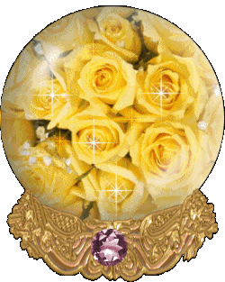
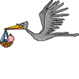
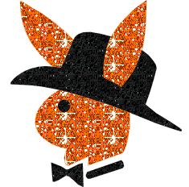
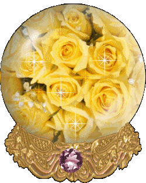
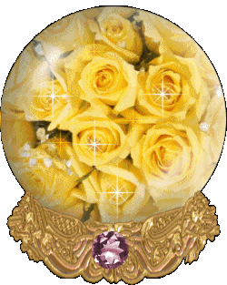
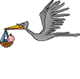
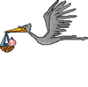
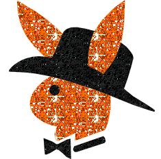
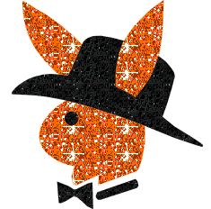

Made by
Seth Kranzler
INTRODUCTION
The extensive wars wherewith Louis XIV was burdened during his reign, while draining the State's treasury and exhausting the substance of the people, none the less contained the secret that led to the prosperity of a swarm of those bloodsuckers who are always on the watch for public calamities, which, instead of appeasing, they promote or invent so as, precisely, to be able to profit from them the more advantageously
The end of this so very sublime reign was perhaps one of the periods in the history of the French Empire when one saw the emergence of the greatest number of these mysterious fortunes whose origins are as obscure as the lust and debauchery that accompany them
"It was toward the close of this period, and not long before the Regent sought, by means of the famous tribunal which goes under the name of the Chambre de Justice, to flush this multitude of traffickers, that four of them conceived the idea for the singular revels whereof we are going to give an account"
One must not suppose that it was exclusively the low-born and vulgar sort which did this swindling; gentlemen of the highest note led the pack
The Duc de Blangis and his brother the Bishop of X***, each of whom had thuswise amassed immense fortunes, are in themselves solid proof that, like the others, the nobility neglected no opportunities to take this road to wealth
"These two illustrious figures, through their pleasures and business closely associated with the celebrated Durcet and the Président de Curval, were the first to hit upon the debauch we propose to chronicle, and having communicated the scheme to their two friends, all four agreed to assume the major roles in these unusual orgies"
For above six years these four libertines, kindred through their wealth and tastes, had thought to strengthen their ties by means of alliances in which debauchery had by far a heavier part than any of the other motives that ordinarily serve as a basis for such bonds
What they arranged was as follows: the Duc de Blangis, thrice a widower and sire of two daughters one wife had given him, having noticed that the Président de Curval appeared interested in marrying the elder of these girls, despite the familiarities he knew perfectly well her father had indulged in with her, the Duc, I say, suddenly conceived the idea of a triple alliance
"You want Julie for your wife," said he to Curval, "I give her to you unhesitatingly and put but one condition to the match: that you'll not be jealous when, although your wife, she continues to show me the same complaisance she always has in the past; what is more, I'd have you lend your voice to mine in persuading our good Durcet to give me his daughter Constance, for whom, I must confess, I have developed roughly the same feelings you have formed for Julie
"
"But," said Curval, "you are surely aware that Durcet, just as libertine as you…"
"I know all that's to be known," the Duc rejoined
"In this age, and with our manner of thinking, is one halted by such things? do you think I seek a wife in order to have a mistress? I want a wife that my whims may be served, I want her to veil, to cover an infinite number of little secret debauches the cloak of marriage wonderfully conceals
In a word, I want her for the reasons you want my daughter—do you fancy I am ignorant of your object and desires? We libertines wed women to hold slaves: as wives they are rendered more submissive than mistresses, and you know the value we set upon despotism in the joys we pursue
"
It was at this point Durcet entered
His two friends related their conversation and, delighted by an overture which promptly induced him to avow the sentiments he too had conceived for Adelaide, the Président's, Durcet accepted the Duc as his son-in-law, provided he might become Curval's
"The three marriages were speedily concluded, the dowries were immense, the wedding contracts identical"
No less culpable than his two colleagues, the Président had admitted to Durcet, who betrayed no displeasure upon learning it, that he maintained a little clandestine commerce with his own daughter; the three fathers, each wishing not only to preserve his rights, but noticing here the possibility of extending them, commonly agreed that the three young ladies, bound to their husbands by goods and homes only, would not in body belong more to one than to any of them, and the severest punishments were prescribed for her who should take it into her head not to comply with any of the conditions whereunto she was subject
"They were on the eve of realizing their plan when the Bishop of X***, already closebound through pleasure shared with his brother's two friends, proposed contributing a fourth element to the alliance should the other three gentlemen consent to his participation in the affair"
This element, the Duc's second daughter and hence the Bishop's niece, was already more thoroughly his property than was generally imagined
"He had effected connections with his sister-in-law and the two brothers knew beyond all shadow of doubt that the existence of this maiden, who was called Aline, was far more accurately to be ascribed to the Bishop than to the Duc; the former who, from the time she left the cradle, had taken the girl into his keeping, had not, as one may well suppose, stood idle as the years brought her charms to flower"
And so, upon this head, he was his colleagues' equal, and the article he offered to put on the market was in an equal degree damaged or degraded; but as Aline's attractions and tender youth outshone even those of her three companions, she was unhesitatingly made a part of the bargain
As had the other three, the Bishop yielded her up, but retained the rights to her use; and so each of our four characters thus found himself husband to four wives
Thus there resulted an arrangement which, for the reader's convenience, we shall recapitulate:
The Duc, Julie's father, became the husband of Constance, Durcet's daughter; Durcet, Constance's father, became the husband of Adelaide, the Président's daughter; The Président, Adelaide's father, became the husband of Julie, the Duc's elder daughter; And the Bishop, Aline's uncle and father, became the husband of the other three females by ceding this same Aline to his friends, the while retaining the same rights over her
"It was at a superb estate of the Duc, situated in the Bourbonnais, that these happy matches were made, and I leave to the reader to fancy how they were consummated and in what orgies; obliged as we are to describe others, we shall forego the pleasure of picturing these"
Upon their return to Paris, our four friends' association became only the firmer; and as our next task is to make the reader familiar with them, before proceeding to individual and more searching developments, a few details of their lubricious arrangements will serve, it seems to me, to shed a preliminary light upon the character of these debauchees
The society had created a common fund, which each of its members took his turn administering for six months; the sums, allocated for nothing but expenses in the interests of pleasure, were vast
Their excessive wealth put the most unusual things within their reach, and the reader ought not be surprised to hear that two million were annually disbursed to obtain good cheer and lust's satisfaction
""
"Four accomplished procuresses to recruit women, and a similar number of pimps to scout out men, had the sole duty to range both the capital and the provinces and bring back everything, in the one gender and in the other, that could best satisfy their sensuality's demands"
"Four supper parties were held regularly every week in four different country houses located at four extremities of Paris"
At the first of these gatherings, the one exclusively given over to the pleasures of sodomy, only men were present; there would always be at hand sixteen young men, ranging in age from twenty to thirty, whose immense faculties permitted our four heroes, in feminine guise, to taste the most agreeable delights
The youths were selected solely upon the basis of the size of their member, and it almost became necessary that this superb limb be of such magnificence that it could never have penetrated any woman; this was an essential clause, and as naught was spared by way of expense, only very rarely would it fail to be fulfilled
"But simultaneously to sample every pleasure, to these sixteen husbands was joined the same quantity of boys, much younger, whose purpose was to assume the office of women"
These lads were from twelve to
"eighteen years old, and to be chosen for service each had to possess a freshness, a face, graces, charms, an air, an innocence, a candor which are far beyond what our brush could possibly paint"
No woman was admitted to these masculine orgies, in the course of which everything of the lewdest invented in Sodom and Gomorrah was executed
At the second supper were girls of superior class who, upon these occasions forced to give up their proud ostentation and the customary insolence of their bearing, were constrained, in return for their hire, to abandon themselves to the most irregular caprices, and often even to the outrages our libertines were pleased to inflict upon them
"Twelve of these girls would appear, and as Paris could not have furnished a fresh supply of them as often as would have been necessary, these evenings were interspersed with others at which were admitted, only in the same number as the well-bred ladies, women ranging from procuresses up through the class of officers' wives"
There are above four or five thousand in Paris who belong to one or the other of the two latter classes and whom need or lust obliges to attend soirees of this kind; one has but to have good agents to find them, and our libertines, who were splendidly represented, would frequently come across miraculous specimens
But it was in vain one was honest or a decent woman, one had to submit everything: our Lordships' libertinage, of a variety that never brooks limits, would overwhelm with horrors and infamies whatever, whether by Nature or social convention, ought to have been exempt from such ordeals
Once one was there, one had to be ready for anything, and as our four villains had every taste that accompanies the lowest, most crapulous debauch, this fundamental acquiescence to their desires was not by any means a matter of inconsequence
The guests at the third supper were the vilest, foulest creatures that can possibly be met with
"To him who has some acquaintance with debauchery's extravagances, this refinement will appear wholly understandable; 'tis most voluptuous to wallow, so to speak, in filth with persons of this category; these exercises offer the completest abandon, the most monstrous intemperance, the most total abasement, and these pleasures, compared with those tasted the evening before, or with the distinguished individuals in whose company we have tasted them, have a way of lending a sharp spice to earlier activities"
At these third suppers, debauch being more thorough, nothing was omitted that might render it complex and piquant
A hundred whores would appear in the course of six hours, and only too often something less than the full hundred would leave the games
But there is nothing to be gained by hurrying our story or by broaching subjects which can only receive adequate treatment in the sequel
As for the fourth supper, it was reserved for young maids; only those between the ages of seven and fifteen were permitted
"Their condition in life was of no importance, what counted was their looks: they had to be charming; as for their virginity, authentic evidence was required"
Oh,
incredible refinement of libertinage! It was not, assuredly, that they wished to pluck all those roses, and how indeed could they have done so? for those untouched flowers were always a score in number, and of our four libertines only two were capable of proceeding to the act, one of the remaining two, the financier, being absolutely incapable of an erection, and the Bishop being absolutely unable to take his pleasure save in a fashion which, yes, I agree, may dishonor a virgin but which, however, always leaves her perfectly intact
"No matter; the twenty maiden-heads had to be there, and those which were not impaired by our quartet of masters became, before their eyes, the prey of certain of their valets just as depraved as they, whom they kept constantly at beck and call for more than one reason"
"Apart from these four supper parties there was another, a secret and private one held every Friday, involving many fewer persons but surely costing a great deal more"
"The participants were restricted to four young and high-born damsels who, by means of strategy and money, had been abducted from their parents' homes"
Our libertines' wives nearly always had a share in this debauch, and their extreme submissiveness, their docile attentions, their services made it more of a success each time
As for the genial atmosphere at these suppers, it goes without saying that even greater profusion than delicacy reigned there; not one of these meals cost less than ten thousand francs, and neighboring countries as well as all France were ransacked so that what was of the rarest and most exquisite might be assembled together
"Fine and abundant wines and liqueurs were there, and even during the winter they had fruits of every season; in a word, one may be certain that the table of the world's greatest monarch was not dressed with as much luxury nor served with equal magnificence"
But now let us retrace our steps and do our best to portray one by one each of our four heroes—to describe each not in terms of the beautiful, not in a manner that would seduce or captivate the reader, but simply with the brush strokes of Nature which, despite all her disorder, is often sublime, indeed even when she is at her most depraved
For—and why not say so in passing—if crime lacks the kind of delicacy one finds in virtue, is not the former always more sublime, does it not unfailingly have a character of grandeur and sublimity which surpasses, and will always make it preferable to, the monotonous and lackluster charms of virtue? Will you protest the greater usefulness of this or of that, is it for us to scan Nature's laws, ours to determine whether, vice being just as necessary to Nature as is virtue, she perhaps does not implant in us, in equal quantity, the penchant for one or the other, depending upon her respective needs? But let us proceed

"The Duc de Blangis, at eighteen the master of an already colossal fortune which his later speculations much increased, experienced all the difficulties which descend like a cloud of locusts"
upon a rich and influential young man who need not deny himself anything; it almost always happens in such cases that the extent of one's vices, and one stints oneself that much less the more one has the means to procure oneself everything
Had the Duc received a few elementary qualities from Nature, they might possibly have counter-balanced the dangers which beset him in his position, but this curious mother, who sometimes seems to collaborate with chance in order that the latter may favor every vice she gives to those certain beings of whom she expects attentions very different from those virtue supposes, and this because she has just as much need of the one as of the other, Nature, I say, in destining Blangis for immense wealth, had meticulously endowed him with every impulse, every inspiration required for its abuse
Together with a tenebrous and very evil mind, she had accorded him a heart of flint and an utterly criminal soul, and these were accompanied by the disorders in tastes and irregularity of whim whence were born the dreadful libertinage to which the Duc was in no common measure addicted
Born treacherous, harsh, imperious, barbaric, selfish as lavish in the pursuit of pleasure as miserly when it were a question of useful spending, a liar, a gourmand, a drunk, a dastard, a sodomite, fond of incest, given to murdering, to arson, to theft, no, not a single virtue compensated that host of vices
Why, what am I saying! not only did he never so much as dream of a single virtue, he beheld them all with horror, and he was frequently heard to say that to be truly happy in this world a man ought not merely fling himself into every vice, but should never permit himself one virtue, and that it was not simply a matter of always doing evil, but also and above all of never doing good
"Oh, there are plenty of people," the Duc used to observe, "who never misbehave save when passion spurs them to ill; later, the fire gone out of them, their now calm spirit peacefully returns to the path of virtue and, thus passing their life going from strife to error and from error to remorse, they end their days in such a way there is no telling just what roles they have enacted on earth
"Such persons," he would continue, "must surely be miserable: forever drifting, continually undecided, their entire life is spent detesting in the morning what they did the evening before"
Certain to repent of the pleasures they taste, they take their delight in quaking, in such sort they become at once virtuous in crime and criminal in virtue
"“However," our hero would add,"
"my more solid character is a stranger to these contradictions; I do my choosing without hesitation, and as I am always sure to find pleasure in the choice I make, never does regret arise to dull its charm
"Firm in my principles because those I formed are sound and were formed very early, I always act in accordance with them; they have made me understand the emptiness and nullity of virtue; I hate virtue, and never will I be seen resorting to it"
They have persuaded me that through vice alone is man capable of experiencing this moral and physical vibration which is the source of the most delicious voluptuousness; so I give myself over to vice
I was still very young when I learned to hold religion's fantasies in contempt, being perfectly convinced that the
"existence of a creator is a revolting absurdity in which not even children continue to believe"
I have no need to thwart my inclinations in order to flatter some god; these instincts were given me by Nature, and it would be to irritate her were I to resist them; if she gave me bad ones, that is because they were necessary to her designs
I am in her hands but a machine which she runs as she likes, and not one of my crimes does not serve her: the more she urges me to commit them, the more of them she needs; I should be a fool to disobey her
"Thus, nothing but the law stands in my way, but I defy the law, my gold and my prestige keep me well beyond reach of those vulgar instruments of repression which should be employed only upon the common sort"
"
If one were to raise the objection that, nevertheless, all men possess ideas of the just and the unjust which can only be the product of Nature, since these notions are found in every people and even amongst the uncivilized, the Duc would reply affirmatively, saying that yes, those ideas have never been anything if not relative, that the stronger has always considered exceedingly just what the weaker regarded as flagrantly unjust, and that it takes no more than the mere reversal of their positions for each to be able to change his way of thinking too; whence the Duc would conclude that nothing is really just but what makes for pleasure, and what is unjust is the cause of pain; that in taking a hundred louis from a man's pocket, he was doing something very just for himself, although the victim of the robbery might have to regard the action with another eye; that all these notions therefore being very arbitrary, a fool he who would allow himself to become their thrall
It was by means of arguments in this kind the Duc used to justify his transgressions, and as he was a man of greatest possible wit, his arguments had a decisive ring
"And so, modeling his conduct upon his philosophy, the Duc had, from his most tender youth, abandoned himself unrestrainedly to the most shameful extravagances, and to the most extraordinary ones"
His father, having died young and, as I indicated, left him in control of a huge fortune, had however stipulated in his will that the young man's mother should, while she lived, be allowed to enjoy a large share of this legacy
Such a condition was not in displeasing Blangis: poison appearing to be the only way to avoid having to subscribe to this article, the knave straightway decided to make use of it
But this was the period when he was only making his first steps in a vicious career; not daring to act himself, he brought one of his sisters, with whom he was carrying on a criminal intrigue, to take charge of the execution, assuring her that if she were to succeed, he would see to it that she would be the beneficiary of that part of the fortune whereof death would deprive their mother
"However, the young lady was horrified by this proposal, and the Duc, observing that this ill-confided secret was perhaps going to betray him, decided on the spot to extend his plans to include the sister he had hoped to have for an accomplice; he conducted both women to one of his properties whence the two unfortunate ones never returned"
"Nothing quite encourages as does one's first unpunished crime"
This hurdle once cleared, an open field seemed to beckon to the Duc
Immediately any person whomsoever showed opposition to his desires, poison was employed forthwith
From necessary murders he soon passed to those of pure pleasure; he was
captivated by that regrettable folly which causes us to find delight in the sufferings of others; he noticed that a violent commotion inflicted upon any kind of an adversary is answered by a vibrant thrill in our own nervous system; the effect of this vibration, arousing the animal spirits which flow within these nerves' con-cavities, obliges them to exert pressure on the erector nerves and to produce in accordance with this perturbation what is termed a lubricious sensation
Consequently, he set about committing thefts and murders in the name of debauchery and libertinage, just as someone else would be content, in order to inflame these same passions, to chase a whore or two
At the age of twenty-three, he and three of his companions in vice, whom he had indoctrinated with his philosophy, made up a party whose aim was to go out and stop a public coach on the highway, to rape the men among the travelers along with the women, to assassinate them afterward, to make off with their victims' money (the conspirators certainly had no need of this), and to be back that same night, all three of them, at the Opera Ball in order to have a sound alibi
This crime took place, ah, yes: two charming maids were violated and massacred in their mother's arms; to this was joined an endless list of other horrors, and no one dared suspect the Duc
Weary of the delightful wife his father had bestowed upon him before dying, the young Blangis wasted no time uniting her shade to his mother's, to his sister's, and to those of all his other victims
Why all this? to be able to marry a girl, wealthy, to be sure, but publicly dishonored and whom he knew full well was her brother's mistress
The person in question was the mother of Aline, one of the figures in our novel we mentioned above
"This second wife, soon sacrificed like the first, gave way to a third, who followed hard on the heels of the second"
It was rumored abroad that the Duc's huge construction was responsible for the undoing of all his wives, and as this gigantic tale corresponded in every point to its gigantic inspiration, the Duc let the opinion take root and veil the truth
That dreadful colossus did indeed make one think of Hercules or a centaur: Blangis stood five foot eleven inches tall, had limbs of great strength and energy, powerful sinews, elastic nerves, in addition to that a proud and masculine visage, great dark eyes, handsome black eyelashes, an aquiline nose, fine teeth, a quality of health and exuberance, broad shoulders, a heavy chest but a well-proportioned figure withal, splendid hips, superb buttocks, the handsomest leg in the world, an iron temperament, the strength of a horse, the member of a veritable mule, wondrously hirsute, blessed with the ability to eject its sperm any number of times within a given day and at will, even at the age of fifty, which was his age at the time, a virtually constant erection in this member whose dimensions were an exact eight inches for circumference and twelve for length over-all, and there you have the portrait of the Duc de Blangis, drawn as accurately as if you'd wielded the pencil yourself
"But if this masterpiece of Nature was violent in its desires, what was it like, Great God! when crowned by drunken voluptuousness? 'Twas a man no longer, 'twas a raging tiger"
Woe unto him who happened then to be serving its passions; frightful cries, atrocious blasphemies sprang from the Duc's swollen breast, flames seemed to dart from his eyes, he foamed at the mouth, he whinnied
like a stallion, you'd have taken him for the very god of lust
Whatever then was his manner of having his pleasure, his hands necessarily strayed, roamed continually, and he had been more than once seen to strangle woman to death at the instant of his perfidious discharge
His presence of mind once restored, his frenzy was immediately replaced by the most complete indifference to the infamies wherewith he had just indulged himself, and of this indifference, of this kind of apathy, further sparks of lechery would be born almost at once
In his youth, the Duc had been known to discharge as often as eighteen times a day, and that without appearing one jot more fatigued after the final than after the initial ejaculation
Seven or eight crises within the same interval still held no terrors for him, his half a century of years notwithstanding
For roughly twenty-five years he had accustomed himself to passive sodomy, and he withstood its assaults with the identical vigor characterized his manner of delivering them actively when, the very next moment, it pleased him to exchange roles
"He had once wagered he could sustain fifty-five attacks in a day, and so he had"
"Furnished, as we have pointed out, with prodigious strength, he needed only one hand to violate a girl, and he had proved it upon several occasions"
One day he boasted he could squeeze the life out of a horse with his legs; he mounted the beast, it collapsed at the instant he had predicted
His prowess at the table outshone, if that is possible, what he demonstrated upon the bed
There's no imagining what had come to be the quantity of the food he consumed
He regularly ate three meals a day, and they were all three exceedingly prolonged and exceedingly copious, and it was as nothing to him to toss down his usual ten bottles of Burgundy; he had drunk up to thirty, and needed but to be challenged and he would set out for the mark of fifty; but his intoxication taking on the tinge of his passions, and liqueurs or wines having heated his brain, he would wax furious, and they would be obliged to tie him down
"And despite all that, would you believe it? a steadfast child might have hurled this giant into a panic; true indeed it is that the spirit often poorly corresponds with the fleshy sheath enveloping it: as soon as Blangis discovered he could no longer use his treachery or his deceit to make away with his enemy, he would become timid and cowardly, and the mere thought of even the mildest combat, but fought on equal terms, would have sent him fleeing to the ends of the earth"
He had nevertheless, in keeping with custom, been in one or two campaigns, but had acquitted himself so disgracefully he had retired from the service at once
"Justifying his turpitude with equal amounts of cleverness and effrontery, he loudly proclaimed that his poltroonery being nothing other than the desire to preserve himself, it were perfectly impossible for anyone in his right senses to condemn it for a fault"
Keep in mind the identical moral traits; next, adapt them to an entity from the physical point of view infinitely inferior to the one we just described; there you have the portrait of the Bishop of X***, the Duc de Blangis' brother
The same black soul, the same penchant for crime, the same
contempt for religion, the same atheism, the same deception and cunning, a yet more supple and adroit mind, however, and more art in guiding his victims to their doom, but a slender figure, not heavy, no, a little thin body, wavering health, very delicate nerves, a greater fastidiousness in the pursuit of pleasure, mediocre prowess, a most ordinary member, even small, but deft, profoundly skilled in management, each time yielding so little that his incessantly inflamed imagination would render him capable of tasting delight quite as frequently as his brother; his sensations were of a remarkable acuteness, he would experience an irritation so prodigious he would often fall into a deep swoon upon discharging, and he almost always temporarily lost consciousness when doing so
He was forty-five, had delicate features, rather attractive eyes but a foul mouth and ugly teeth, a hairless pallid body, a small but well-shaped ass, and a prick five inches around and six in length
"An idolater of active and passive sodomy, but eminently of the latter, he spent his life having himself buggered, and this pleasure, which never requires much expense of energy, was best suited to the modesty of his means"
We will speak of his other tastes in good time
With what regards those of the table, he carried them nearly as far as the Duc, but went about the matter with somewhat more sensuality
Monseigneur, no less a criminal than his elder brother, possessed characteristics which had doubtless permitted him to match the celebrated feats of the hero we painted a moment ago; we will content ourselves with citing one of them, 'twill be enough to make the reader see of what such a man may be capable, and what he was prepared and disposed to do, having done the following:
One of his friends, a man powerful and rich, had formerly had an intrigue with a young noblewoman who had borne him two children, a girl and a boy
He had, however, never been able to wed her, and the maiden had become another's wife
The unlucky girl's lover died while still young, but the owner howbeit of a tremendous fortune; having no kin to provide for, it occurred to him to bequeath all he had to the two ill-fated children his affair had produced
On his deathbed, he made the Bishop privy to his intentions and entrusted him with these two immense endowments: he divided the sum, put them in two purses, and gave them to the Bishop, confiding the two orphans' education to this man of God and enlisting him to pass on to each what was to be his when they attained their majority
At the same time he enjoyed the prelate to invest his wards' funds, so that in the meantime they would double in size
He also affirmed that it was his design to leave his offsprings' mother in eternal ignorance of what he was doing for them, and he absolutely insisted that none of this should ever be mentioned to her
These arrangements concluded, the dying man closed his eyes, and Monseigneur found himself master of about a million in banknotes, and of two children
The scoundrel was not long deliberating his
"next step: the dying man had spoken to no one but him, the mother was to know nothing, the children were only four or five years old"
He circulated the intelligence that his friend, upon expiring, had left his fortune to the poor; the rascal acquired it the same day
But to ruin those wretched children did not suffice; furnished with authority by their father, the Bishop—who never committed one crime without instantly conceiving another—had the children removed from the remote pension in which they were being brought up, and placed them under the roof of certain people in his hire, from the outset having resolved soon to make them serve his perfidious lust
""
He waited until they were thirteen; the little boy was the first to arrive at that age: the Bishop put him to use, bent him to all his debauches, and as he was extremely pretty, sported with him for a week
But the little girl fared less well: she reached the prescribed age, but was very ugly, a fact which had no mitigating effect upon the good Bishop's lubricious fury
His desires appeased, he feared lest these children, left alive, would someday discover something of the secret of their interests
Therefore, he conducted them to an estate belonging to his brother and, sure of recapturing, by means of a new crime, the sparks of lechery enjoyment had just caused him to lose, he immolated both of them to his ferocious passions, and accompanied their death with episodes so piquant and so cruel that his voluptuousness was reborn in the midst of the torments wherewith he beset them
The thing is, unhappily, only too well known: there is no libertine at least a little steeped in vice who is not aware of the great sway murder exerts over the senses, and how voluptuously it determines a discharge
And that is a general truth whereof it were well the reader be early advised before undertaking the perusal of a work which will surely attempt an ample development of this system
Henceforth at ease in the face of whatever might transpire, Monseigneur returned to Paris to enjoy the fruit of his misdeeds, and without the least qualms about having counteracted the intentions of a man who, in his present situation, was in no state to derive either pain or pleasure therefrom
The Président de Curval was a pillar of society; almost sixty years of age, and worn by debauchery to a singular degree, he offered the eye not much more than a skeleton
He was tall, he was dry, thin, had two blue lusterless eyes, a livid and unwholesome mouth, a prominent chin, a long nose
Hairy as a satyr, flat-backed, with slack, drooping buttocks that rather resembled a pair of dirty rags flapping upon his upper thighs; the skin of those buttocks was, thanks to whipstrokes, so deadened and toughened that you could seize up a handful and knead it without his feeling a thing
"In the center of it all there was displayed—no need to spread those cheeks—an immense orifice whose enormous diameter, odor, and color bore a closer resemblance to the depths of a well-freighted privy than to an asshole; and, crowning touch to these allurements, there was numbered among this sodomizing pig's little idiosyncrasies that of"
always leaving this particular part of himself in such a state of uncleanliness that one was at all times able to observe there a rim or pad a good two inches thick
Below a belly as wrinkled as it was livid and gummy, one perceived, within a forest of hairs, a tool which, in its erectile condition, might have been about eight inches long and seven around; but this condition had come to be the most rare and to procure it a furious sequence of things was the necessary preliminary
Nevertheless, the event occurred at least two or three times each week, and upon these occasions the Président would glide into every hole to be found, indiscriminately, although that of a young lad's behind was infinitely the most precious to him
The head of the Président's device was now at all times exposed, for he had had himself circumcised, a ceremony which largely facilitates enjoyment and to which all pleasure-loving persons ought to submit
But one of the purposes of the same operation is to keep this privity cleaner; nothing of the sort in Curval's case: this part of him was just as filthy as the other: this uncapped head, naturally quite thick to begin with, was thus made at least an inch ampler in circumference
Similarly untidy about all the rest of his person, the Président, who furthermore had tastes at the very least as nasty as his appearance, had become a figure whose rather malodorous vicinity might not have succeeded in pleasing everyone
However, his colleagues were not at all of the sort to be scandalized by such trifles, and they simply avoided discussing the matter with him
Few mortals had been as free in their behavior or as debauches as the Président; but, entirely jaded, absolutely besotted, all that remained to him was the depravation and lewd profligacy of libertinage
Above three hours of excess, and of the most outrageous excess, were needed before one could hope to inspire a voluptuous reaction in him
As for his emission, although in Curval the phenomenon was far more frequent than erection, and could be observed once every day, it was, all the same, so difficult to obtain, or it never occurred save as an aftermath to things so strange and often so cruel or so unclean, that the agents of his pleasure not uncommonly renounced the struggle, fainting by the wayside, the which would give birth in him to a kind of lubricious anger and this, through its effects, would now and again triumph where his efforts had failed
Curval was to such a point mired down in the morass of vice and libertinage that it had become virtually impossible for him to think or speak of anything else
"He unendingly had the most appalling expressions in his mouth, just as he had the vilest designs in his heart, and these with surpassing energy he mingled with blasphemies and imprecations supplied him by his true horror, a sentiment he shared with his companions, for everything that smacked of religion"
This disorder of mind, yet further augmented by the almost continual intoxication in which he was fond of keeping himself, had during the past few years given him an air of imbecility and prostration which, he would declare, made for his most cherished delight

"Born as great a gourmand as a drunk, he alone was fit to keep abreast of the Duc, and in the"
"course of this tale we will behold him to perform wonders which will no doubt astonish the most veteran eaters"
""
It had been ten years since Curval had ceased to discharge his judicial duties; it was not simply that he was no longer fit to carry them out, but I even believe that while he had been, he may have been asked to leave these matters alone for the rest of his life
""
Curval had led a very libertine life, every sort of perversion was familiar to him, and those who knew him personally had the strong suspicion he owed his vast fortune to nothing other than two or three murders
However that may be, it is, in the light of the following story, highly probable that this variety of extravagance had the power to stir him deeply, and it is this adventure, which attracted some unfortunate publicity, that was responsible for his exclusion from the Court
"We are going to relate the episode in order to give the reader an idea of his character"
There dwelled in the neighborhood of Curval's town house a miserable street porter who, the father of a charming little girl, was ridiculous enough to be a person of sensibility
Twenty messages of every kind had already arrived containing proposals relating to the poor fellow's daughter; he and his wife had remained unshaken despite this barrage aimed at their corruption, and Curval, the source of these embassies, only irritated by the growing number of refusals they had evoked, knew not what tack to take in order to get his hands upon the girl and to subject her to his libidinous caprices, until it struck to him that by simply having the father broken he would lead the daughter to his bed
The thing was as nicely conceived as executed
Two or three bullies in the Président's pay intervened in the suit, and before the month was out, the wretched porter was enmeshed in an imaginary crime which seemed to have been committed at his door and which got him speedily lodged in one of the Conciergerie's dungeons
The Président, as one would expect, soon took charge of the case, and, having no desire to permit it to drag on, arranged in the space of three days, thanks to his knavery and his gold, to have the unlucky porter condemned to be broken on the wheel, without the culprit ever having committed any crime but that of wishing to preserve his honor and safeguard his daughter's
"Meanwhile, the solicitations were renewed"
The mother was brought in, it was explained to her that she alone had it in her power to save her husband, that if she were to satisfy the Président, what could be clearer than that he would thereupon snatch her husband from the dreadful fate awaiting him
Further hesitation was impossible; the woman made inquiries; Curval knew perfectly well to whom she addressed herself, the counsels were his creatures, and they gave her unambiguous replies: she ought not waste a moment
The poor woman herself brought her daughter weeping to her judge's feet; the latter could not have been more liberal with his
"promises, nor have been less eager to keep his word"
Not only did he fear lest, were he to deal honorably and spare the husband, the man might go and raise an uproar upon discovering the price that had been paid to save his life, but the scoundrel even found a further delight, a yet keener one, in arranging to have himself given what he wished without being obliged to make any return
This thought led to others; numerous criminal possibilities entered his head, and their effect was to increase his perfidious lubricity
And this is how he set about the matter so as to put the maximum of infamy and piquancy into the scene:
His mansion stood facing a spot where criminals are sometimes executed in Paris, and as this particular offense had been committed in that quarter of the city, he won assurance the punishment would be meted out on this particular square
The wretch's wife and daughter arrived at the Président's home at the appointed hour; all windows overlooking the square were well shuttered, so that, from the apartments where he amused himself with his victims, nothing at all could be seen of what was going on outside
Apprised of the exact minute of the execution, the rascal selected it for the deflowering of the little girl who was held in her mother's arms, and everything was so happily arranged that Curval discharged into the child's ass the moment her father expired
Instantly he'd completed his business, "Come have a look," quoth he, opening a window looking upon the square, "come see how well I've kept my bargain," and one of his two princesses saw her father, the other her husband, delivering up his soul to the headsman's steel
Both collapsed in a faint, but Curval had provided for everything: this swoon was their agony, they'd both been poisoned, and nevermore opened their eyes
Notwithstanding the precautions he had taken to swathe the whole of this exploit in the most profound mystery, something did indeed transpire: nothing was known of the women's death, but there existed a lively suspicion he had been untruthful in connection with the husband's case
"His motive was half-known, and his eventual retirement from the bench was the outcome"
As of this moment, no longer having to maintain appearances, Curval flung himself into a new ocean of errors and crimes
He sent everywhere for victims to sacrifice to the perversity of his tastes
Through an atrocious refinement of cruelty, but one, however, very easily understood, the downtrodden classes were those upon which he most enjoyed hurling the effects of his raging perfidy
"He had several minions who were abroad night and day, scouring attics and hovels, tracking down whatever of the most destitute misery might be able to provide, and under the pretext of dispensing aid, either he envenomed his catch—to give poison was one of his most delectable pastimes—or he lured it to his house and slew it upon the altar of his perverse preferences"
Men, women, children: anything was fuel to his rage, and at its bidding he performed excesses which would have got his head between
block and blade a thousand times over were it not for the silver he distributed and the esteem he enjoyed, factors whereby he was a thousand times protected
One may well imagine such a being had no more religion than his two confreres; he without doubt detested it as sovereignly as they, but in years past had done more to wither it in others, for, in the days when his mind had been sound, it had also been clever, and he had put it to good use writing against religion; he was the author of a several works whose influence had been prodigious, and these successes, always present in his memory, still constituted one of his dearest delights
The more we multiply the objects of our enjoyments…1
(a) …the years of a sickly childhood
(b) Durcet is fifty-three; he is small, short, broad, thickset; an agreeable, hearty face; a very white skin; his entire body, and principally his hips and buttocks, absolutely like a woman's; his ass is cool and fresh, chubby, firm, and dimpled, but excessively agape, owing to the habit of sodomy; his prick is extraordinarily small, 'tis scarcely two inches around, no more than four inches long; it has entirely ceased to stiffen; his discharges are rare and uneasy, far from abundant and always preceded by spasms which hurl him into a kind of furor which, in turn, conducts him to crime; he has a chest like a woman's, a sweet, pleasant voice and, when in society, the best-bred manners, although his mind is without question as depraved as his colleagues'; a schoolmate of the Duc, they still sport together every day, and one of Durcet's loftiest pleasures is to have his anus tickled by the Duc's enormous member
"And such, dear reader, are the four villains in whose company I am going to have you pass a few months"
I have done my best to describe them; if, as I have wished, I have made you familiar with even their most secret depths, nothing in the tale of their various follies will astonish you
I have not been able to enter into minute detail with what regards their tastes—to have done so now would have been to impair the value and to harm the main scheme of this work
But as we move progressively along, you will have but to keep an attentive eye upon our heroes, and you'll have no trouble discerning their characteristic peccadilloes and the particular type of voluptuous mania which best suits each of them
Roughly all we can say at the present time is that they were generally susceptible of an enthusiasm for sodomy, that the four of them had themselves buggered regularly, and that they all four worshiped behinds
"The Duc, however, relative to the immensity of his weapon and, doubtless, more through cruelty than from taste, still fucked cunts with the greatest pleasure"
1 Place here the portrait of Durcet as it is in notebook 18, the one that’s bound in pink, then, after having concluded this portrait with the words under (a) in the notebooks, continue with (b)
So also did the Président, but less frequently
"As for the Bishop, such was his supreme loathing for them the mere sight of one might have kept him limp for six months"
"He had never in all his life fucked but one, that belonging to his sister-in-law, and expressly to beget a child wherewith some day to procure himself the pleasures of incest; we have seen how well he succeeded"
""
As regards Durcet, he certainly idolized the ass with as much fervor as the Bishop, but his enjoyment of it was more accessory; his favorite attacks were directed toward a third sanctuary—this mystery will be unveiled in the sequel
But on with the portraits essential to the intelligence of this work, and let us now give our reader an idea of these worthy husbands' four wives
"What a contrast! Constance, the Duc's wife and the daughter of Durcet, was a tall woman, slender, lovely as a picture, and modeled as if the Graces had taken pleasure in embellishing her, but the elegance of her figure in no way detracted from her freshness, she was not for that the less plumply fleshed, and the most delicious forms graced by a skin fairer than the lily, often induced one to suppose that, no, it had been Love itself who had undertaken her formation"
Her face was a trifle long, her features wonderfully noble, more majesty than gentleness was in her look, more grandeur than subtlety
Her eyes were large, black, and full of fire; her mouth extremely small and ornamented by the finest teeth imaginable, she had a narrow, supple tongue, of the loveliest pink, and her breath was sweeter still than the scent of a rose
She was full-breasted, her bosom was buxom, fair as alabaster and as firm
Her back was turned in an extraordinary way, its lines sweeping deliciously down to the most artistically and the most precisely cleft ass Nature has produced in a long time
Nothing could have been more perfectly round, not very large, but firm, white, dimpled; and when it was opened, what used to peep out but the cleanest, most winsome, most delicate hole
"A nuance of tenderest pink had shaded this ass, charming asylum of lubricity's sweetest pleasures, but, great God! it was not for long to preserve so many charms! Four or five attacks, and the Duc had spoiled all those graces, how quickly had they gone, and soon after her marriage Constance was become no more than the image of a beautiful lily wherefrom the tempest has of late stripped the petals away"
Two round and perfectly molded thighs supported another temple, in all likelihood less delicious, but, to inclined to worship there, offering so many allurements it would be in vain were my pen to strive to describe them
Constance was almost a virgin when the Duc married her, and her father, the only man who had known her, had, as they say, left that side of her perfectly intact
The most beautiful black hair—falling in natural curls to below her shoulders and, when one wished it thus,
"reaching down to the pretty fur, of the same color, which shaded that voluptuous little cunt—made for a further adornment I might have been guilty of omitting, and lent this angelic creature, aged about twenty-two, all the charms Nature is able to lavish upon a woman"
To all these amenities Constance joined a fair and agreeable wit, a spirit somewhat more elevated than it ought to have been, considering the melancholy situation fate had awarded her, for thereby she was enabled to sense all its horrors and, doubtless, she would have been happier if furnished with less delicate perceptions
Durcet, who had raised her more as if she were a courtesan than his daughter, and who had been much more concerned to give her talents than manners, had all the same never been able totally to destroy the principles of rectitude and of virtue it seemed Nature had been pleased to engrave in her heart
She had no formal religion, no one had ever mentioned such a thing to her, the exercise of a belief was not to be tolerated in her father's household, but all that had not blotted out this modesty, this natural humility which has nothing to do with theological chimeras, and which, when it dwells in an upright, decent, and sensitive soul, is very difficult to obliterate
"Never had she stepped out of her father's house, and the scoundrel had forced her, beginning at the age of twelve, to serve his crapulous pleasures"
She found a world of difference in those the Duc imbibed with her, her body was noticeably altered by those formidable dimensions, and the day after the Duc had despoiled her of her maidenhead, sodomistically speaking, she had fallen dangerously ill
They believed her rectum had been irreparably damaged; but her youth, her health, and some salutary local remedies soon restored the use of that forbidden avenue to the Duc, and the luckless Constance, forced to accustom herself to this daily torture, and it was but one amongst others, entirely recovered and became adjusted to everything
"Adelaide, Durcet's wife and the daughter of the Président, had a beauty which was perhaps superior to Constance's, but of an entirely different sort"
She was twenty, small and slender, of an extremely slight and delicate build, of classic loveliness, had the finest blond hair to be seen
"An interesting air, a look of sensibility distributed everywhere about her, and above all in her features, gave her the quality of a heroine in a romance"
Her exceptionally large eyes were blue, they expressed at once tenderness and decency; two long but narrow and remarkably drawn eyebrows adorned a forehead not very high but of such noble charm one might have thought this were modesty's very temple
Her nose, thin, a little pinched at the top, descended to assume a semi-aquiline contour; her lips inclined toward the thin, were of a bright, ripe red; a little large, her mouth was the unique flaw in this celestial physiognomy, but when it opened, there shone thirty-two pearls Nature seemed to have sown amidst roses
"Her neck was a shade long, attached in a singular way, through what one judged a natural habit, her head was ever so faintly bent toward her right shoulder, especially when she was listening; but with what grace did not this interesting"
attitude endow her! Her breasts were small, very round, very firm, well-elevated, but there was barely enough there to fill the hand
They were like two little apples a frolicking Cupid had fetched hither from his mother's garden
"Her chest was a bit narrow, it was also a very delicate chest, her belly was satin smooth, a little blond mound not much garnished with hair served as peristyle to the temple in which Venus seemed to call out for an homage"
This temple was narrow to such a point you could not insert a finger therein without eliciting a cry from Adelaide; nevertheless, two lustrums had revolved since the time when, thanks to the Président, the poor child had ceased to be a virgin, either in that place or in the delicious part it remains for us to sketch
Oh, what were the attractions this second sanctuary possessed, what a flow in the line of her back, how magnificently were those buttocks cut, what whiteness there, and what dazzling rose blush! But all on all, it was on the small side
Delicate in all her lines, she was rather the sketch than the model of beauty, it seemed as though Nature had only wished to indicate in Adelaide what she had so majestically articulated in Constance
Peer into that appetizing behind, and lo! a rosebud would offer itself to your gaze, and it was in all its bloom and in the most tender pink Nature wished you to behold it; but narrow? tiny? it had only been at the price of infinite labors the Président had navigated through those straits, and he had only renewed these assaults successfully two or three times
Durcet, less exacting, gave her little affliction in this point, but, since becoming his wife, in exchange for how many other cruel complaisances, with what a quantity of other perilous submissions had she not been obliged to purchase this little kindness? And, furthermore, turned over to the four libertines, as by their mutual consent she was, how many other cruel ordeals had she not to undergo, both of the species Durcet spared her, and of every other
""
Adelaide had the mind her face suggested, that is to say, an extremely romantic mind, solitary places were the ones she preferred, and once there, she would shed involuntary tears—tears to which we do not pay sufficient heed—tears apparently torn from Nature by foreboding
She was recently bereft of a friend, a girl she idolized, and this frightful loss constantly haunted her imagination
As she was thoroughly acquainted with her father, as she knew to what extents he carried his wild behavior, she was persuaded her young friend had fallen prey to the Président's villainies, for he had never managed to induce the missing person to accord him certain privileges
The thing was not unlikely
Adelaide imagined the same would someday befall her; nor was that improbable
The Président, in her regard, had not paid the same attention to the problem of religion Durcet had in the interests of Constance, no, he had allowed all that nonsense to be born, to be fomented, supposing that his writings and his discourses would easily destroy it
He was mistaken: religion is the nourishment upon which a soul such as Adelaide's feeds
In vain the Président had preached, in vain he had made her read books, the young lady had remained a
believer, and all these extravagances, which she did not share, which she hated, of which she was the victim, fell far short of disabusing her about illusions which continued to make for her life's happiness
She would go and hide herself to pray to God, she'd perform Christian duties on the sly, and was unfailingly and very severely punished, either by her father or her husband, when surprised in the act by the one or the other
Adelaide patiently endured it all, fully convinced Heaven would someday reward her
"Her character was as gentle as her spirit, and her benevolence, one of the virtues for which her father most detested her, went to the point of extreme"
"Curval, whom that vile class of the poverty-stricken irritated, sought only to humiliate it, to further depress it, or to wring victims from it; his generous daughter, on the other hand, would have foregone her own necessities to procure them for the poor, and she had often been espied stealing off to take to the needy sums which were intended for her pleasures"
Durcet and the Président finally succeeded in scolding and pounding good manners into her, and in ridding her of this corrupt practice by withholding absolutely all means whereby she could resume it
Adelaide, having nothing left but her tears to bestow upon the poor, went none the less to sprinkle them upon their woes, and her powerless howbeit staunchly sensitive spirit was incapable of ceasing to be virtuous
One day she learned that some poor woman was to come to prostitute her daughter to the Président because extreme need bade her do so; the enchanted old rake was already preparing himself for the kind of pleasure-taking he liked best
Adelaide had one of her dresses sold and immediately got the money put it in the mother's hands; by means of this small assistance and some sort of a sermon, she diverted the woman from the she was about to commit
Hearing of what she had done, the Président proceeded to such violences with her—his daughter was not yet married at the time—that she was a fortnight abed; but all that was to no avail: nothing could put a stop to this gentle soul's tender impulses
Julie, the Président's wife, the Duc's elder daughter, would have eclipsed the two preceding women were it not for something which many behold as a capital defect, but which had perhaps in itself aroused Curval's passion for her, so true it is that the effects of passion are unpredictable, nay, inconceivable, and that their disorder, the outcome of disgust and satiety, can only be matched by their irregular flights
"Julie was tall, well made although quite fat and fleshy, had the most lovely brown eyes in the world, a charming nose, striking and gracious features, the most beautiful chestnut brown hair, a fair body of the most appetizing fullness, an ass which might easily have served as model to the one Praxiteles sculpted, her cunt was hot, strait, and yielded as agreeable a sensation as such a locale ever may; her legs were handsome, her feet charming, but she had the worst-decked mouth, the foulest teeth, and was by habit so dirty in every other part of her body, and principally at the two temples of lubricity, that no other being, let me repeat"
it, no other being but the Président, himself subject to the same shortcomings and unquestionably fond of them, nay, no one else, despite her allurements, could have put up with Julie
Curval, however, was mad about her; his most divine pleasures were gathered upon that stinking mouth, to kiss it plunged him into delirium, and as for her natural uncleanliness, far from rebuking her for it, to the contrary he encouraged her in it, and had finally got her accustomed to a perfect divorce from water
"To these faults Julie added a few others, but they were surely less disagreeable: she was a vast eater, she had a leaning toward drunkenness, little virtue, and I believe that had she dared try it, whoredom would have held little by way of terror for her"
Brought up by the Duc in a total abandon of principles and manners, she adopted a whore's philosophy, and she was probably an apt student of all its tenets; but, through yet another very curious effect of libertinage, it often happens that a woman who shares our faults pleases us a great deal less in our pleasures than one who is full of naught but virtues: the first resembles us, we scandalize her not; the other is terrified, and there is one very certain charm more
Despite his proportions, the Duc had sported with his daughter, but he had had to wait until she was fifteen, and even so had not been able to prevent Julie from being considerably damaged by the adventure, indeed, so much so that, eager to marry her off, he had been forced to put a term to pleasure-taking of this variety and to be content with delights less dangerous for her, but at least as fatiguing
Julie gained little by gaining the Président, whose prick, as we know, was exceedingly thick and, furthermore, however much she was dirty from neglect of herself, she could not in any wise keep up with a filthiness in debauch such as the one that distinguished the Président, her beloved spouse
""
Aline, Julie's younger sister and really the daughter of the Bishop, possessed habits and defects and a character very unlike her sister's
She was the most youthful of the four, she had just become eighteen; she had a fetching, exuberantly healthy, and almost pert little countenance; a little turned-up nose; brown eyes full of expression and vivacity; a delicious mouth; a most shapely though somewhat tall figure, well-fleshed; the skin a bit dark but soft and fine; ass rather on the ample side but well-molded, a pair of the most voluptuous buttocks that ever a libertine eye may behold, the love mound brown-haired and pretty, the cunt a trifle low or, as they say, à l'anglaise, but as tight as one might wish, and when she was presented to the assembly she was thoroughly a maid
"And she still was at the time the party we are to chronicle got under way, and we shall see in what manner her maidenhead was annihilated"
As for the first fruits of her ass, the Bishop had been peacefully plucking them every day for the past eight years, but without, however, arousing in his dear daughter much of a taste for these exercises: she, despite her mischievous and randy air, only
cooperated out of obedience and had never hinted that she shared the slightest pleasure in the infamies whose daily victim she was
The Bishop had left her in the most profound ignorance, scarcely did she know how to read or write, and she had absolutely no idea of religion's existence; her mind was natural, it was that of a child, she would give droll replies, she liked to play, she loved her sister a great deal, detested the Bishop out of all measure, and feared the Duc as she dreaded fire
"On the wedding day, when she discovered herself naked and surrounded by the four men, she wept, and moreover did all that was asked of her, acting without pleasure as without ill-temper"
"She was sober, very clean, and having no other fault but that of laziness, nonchalance reigned in all her movements and doings and everywhere about her person, despite the liveliness announced by her bright eyes"
She abhorred the Président almost as much as she hated her uncle, and Durcet, who treated her with no excess of consideration, nevertheless seemed to be the only one for whom she appeared to have no repugnance
""
"These were the eight principal characters in whose company we are going to enable you to live, good reader"
"It is now time to divulge the object of singular pleasures that were proposed"
It is commonly accepted amongst authentic libertines that the sensations communicated by the organs of hearing are the most flattering and those impressions are the liveliest; as a consequence, our four villains, who were of a mind to have voluptuousness implant itself in the very core of their beings as deeply and as overwhelmingly as ever it could penetrate, had, to this end, devised something quite clever indeed
It was this: after having immured themselves within everything that was best able to satisfy the senses through lust, after having established this situation, the plan was to have described to them, in the greatest detail and in due order, every one of debauchery's extravagances, all its divagations, all its ramifications, all its contingencies, all of what is termed in libertine language its passions
There is simply no conceiving the degree to which man varies them when his imagination grows inflamed; excessive may be the differences between men that is created by all their other manias, by all their other tastes, but in this case it is even more so, and he who should succeed in isolating and categorizing and detailing these follies would perhaps perform one of the most splendid labors which might be undertaken in the study of manners, and perhaps one of the most interesting
It would thus be a question of finding some individuals capable of providing an account of all these excesses, then of analyzing them, of extending them, of itemizing them, of graduating them, and of running a story through it all, to provide coherence and amusement
Such was the decision adopted
After innumerable inquiries and investigations, they located four women who had attained their prime—that was necessary, experience was the fundamental thing here—four women, I say, who, having spent their lives in the most furious debauchery, had
reached the state where they could provide an exact account of all these matters; and, as care had been taken to select four endowed with a certain eloquence and a fitting turn of mind, after much discussion, recording, and arranging, all four were ready to insert, each into the adventures of her life, all the most extraordinary vagaries of debauch, and to do so in such an order and at such a pace that the first, for example, would work into the tale of her life's activities the one hundred and fifty simple passions and the least esoteric or most ordinary deviations; the second, within the same framework, an equal number of more unusual passions involving one or more men with one or several women; the third was also to introduce into her narration one hundred and fifty of the most criminal whimsies and those which most outrage the laws of both Nature and religion; and as all these excesses lead to murder and as these murders committed through libertinage are infinitely various and are just as numerous as the occasions upon which the libertine's inflamed imagination adopts different tortures, the fourth was to adorn the events of her life with a meticulous report upon one hundred and fifty assorted examples of them
In the meantime, our libertines, surrounded, as at the outset I indicated, by their wives and also by other objects in every kind, were to pay close heed, were to be mentally heated, and were to end by extinguishing, by means of either their wives or those various objects, the conflagration the storytellers were to have lit
There is surely nothing more voluptuous in this project than the luxurious manner whereby it was carried out, and they are both this manner and these several recitations which are to compose this work; wherewith, having said this much, I advise the overmodest to lay my book aside at once if he would not be scandalized, for 'tis already clear there's not much of the chaste in our plan, and we dare hold ourselves answerable in advance that there'll be still less in its execution
Insomuch as the four actresses we have been speaking of play a most essential role in these memoirs, we believe, even were we to have to beg the reader's forgiveness therefor, we should still feel obliged to describe them; they will narrate, they will act: such being the case, is it possible that they remain unknown? Banish all expectation of beauties portrayed, although there were doubtless in the plans provisions for employing these four creatures physically as well as morally; be that as it may, neither their charms nor their years were the deciding factors, but rather their minds and their experience only that counted, and with what regards the latter, our friends could not possibly have made better choices
Madame Duclos was she to whom they entrusted the relating of the one hundred and fifty simple passions; the woman who went by this name was forty-eight years of age, still in fairly good condition and preserving the vestiges of beauty; she had very handsome eyes, an exceedingly fair skin, and one of the most splendid and plumpest asses that could ever favor your gaze; a mouth both clean and fresh, superb breasts, and pretty brown hair, a heavy figure but a noble one, and all the looks and tone of a brilliant whore
She had spent her life, as shall be observed, in places and under circumstances where indeed she had been obliged to study what she is
"going to relate, and to see her was to realize she must have gone to the task with wit and verve, with ease and interest"
"Madame Champville was a tall woman about fifty, slender, well made, having the most voluptuous quality in her look and bearing; a faithful devotee of Sappho, she had that kind of expression even in her slightest movements, in her simplest gestures, in her least words"
"She had ruined herself for the sake of keeping girls and, had it not been for this predilection to which she generally sacrificed everything she was able to earn abroad, she might have been comfortably well to do"
For a long time she had been in public service, and during recent years had been making her way as an outfitter in her turn, but had confined herself to a limited practice, her clients being reliable rakehells of a certain age; never did she receive young men, and this prudent conduct was lucrative and did something to improve her affairs
She had been blond, but a more venerable tint, and that of wisdom, was beginning to color her hair; her eyes were still exceedingly attractive, blue, and they contained a most agreeable expressiveness
Her mouth was lovely, still fresh, missing no teeth as yet, she was flat-chested but had a belly which was good, but had never aroused envy, her mound was rather prominent, and her clitoris protruded three inches when well warmed; tickle this part of her and one was certain to see her fly into an ecstasy in no time, and especially if the service was rendered by a female
Her ass was very flabby and worn from use, entirely soft, wrinkled, withered, and so toughened by the libidinous customs she in recounting her history will explain to us, that one could do everything one wished without her feeling anything there
One strange and assuredly very rare thing, above all in Paris: she was as much a maid on this side as a girl emerging from a convent, and perhaps, had it not been for the accursed part she put to use with people who cared for nothing but the extraordinary and whom, consequently, that side pleased, perhaps, I say, had it not been for that part, this singular virginity might have perished with her
Madame Martaine, a portly matron of fifty-two, very well preserved and very healthy and blessed with the biggest and most beautiful rump one could wish for, boasted the precise opposite by way of adventure
She had devoted her life to sodomitical debauch, and was so well familiarized therewith she tasted absolutely no joy save therefrom
A natural deformity (she had also been blessed with an obstruction) having prevented her from knowing any other, she had given herself over to this kind of pleasure, led to it both by her inability to do anything else and by early habit, in consideration of which she clung fast to this lubricity wherein 'twas declared she was yet delicious, ready to brave come what might, dreading nothing
The most monstrous engines were as naught to her, in fact such were the ones she preferred, and the sequel to these papers will perhaps reveal her still giving valorous fight beneath the standards of Sodom, as the most intrepid of buggresses
Her features were gracious enough, but signs of languor and of decline
were beginning to mar her attractions, and but for the plumpness sustaining her yet, she might have been thought timeworn and frayed
As for Madame Desgranges, she was vice and lust personified; tall, thin, fifty-six, ghostly pale and emaciated, dead dull eyes, dead lips, she offered an image of crime about to perish for lack of strength
"She had once upon a time been brunette, there were some who even maintained she'd had a beautiful body; not long thereafter it had become a mere skeleton capable of inspiring nothing but disgust"
Her ass, withered, worn, marked, torn, more resembled marbled paper than human skin, and its hole was so gaping, sprung, and rugose that the bulkiest machines could, without her knowing a thing, penetrate it dry
"By way of crowning graces, this generous Cytherean athlete, wounded in several combats, was missing one nipple and three fingers"
She limped, and was without six teeth and an eye
We may perhaps learn by what order of attacks she had been so mistreated; but one thing is certain: nothing she had suffered had induced her to mend her ways, and if her body was the picture of ugliness, her was the depository of all the most unheard of vices and crimes: an arsonist, a parricide, a sodomite, a tribade, a murderess, a poisoner, guilty of incest, of rape, of theft, of abortions, and of sacrileges, one might truthfully affirm that there is not a single crime in the world this villain had not committed herself, or had others commit for her
Her present calling was procuring; she was one of society's most heavily titled furnishers, and as to much experience she joined a more or less agreeable prattle, she had been chosen to fill the role of fourth storyteller, that is to say, the one in whose story the greatest number of infamies and horrors were to be combined
Who better than a creature who had performed them all could have played this part?
"These women once found, and found in every article to be such as was desired, the friends turned their attentions to accessories"
They had from the outset planned to surround themselves with a large number of lust-inspiring objects of either sex, but when it was brought to their attention that the only setting in which this lubricious roister could conveniently be held was that same château in Switzerland belonging to Durcet, the one in which he had dispatched little Elvire, when, I say, it was remarked that this château of only moderate size would not be able to lodge so great a throng of inhabitants, and that, what was more, it might well prove unwise or dangerous to bring along such a host, the list of subjects was trimmed to thirty-two in all, the storytellers included: to wit: four of that class, eight young girls, eight young boys, eight men endowed with monstrous members, for the delights of passive sodomy, and four female servants
"But thoroughness went into the recruiting of all that; a year was devoted to these details, an enormous amount of money too, and these are the measures they employed to obtain the most delicious specimens of all France could offer in the way of eight little girls: sixteen intelligent procuresses, each accompanied by two lieutenants, were sent into the sixteen major provinces of"
France, while a seventeenth was occupied with the same work in Paris only
"Each of these outfitters was given a rendezvous at one of the Duc's estates on the outskirts of Paris, and all of them were to appear there, during the same week, exactly ten months after the date of their departure—this was the period they were given for searching"
Each was to bring back nine subjects, which came to a total of one hundred and fifty-three girls, from which one hundred and fifty-three a choice of only eight was to be made
"The procuresses were instructed to emphasize high birth, virtuousness, and the most delicious visage possible; they were to conduct their researches so as to draw material chiefly from eminent families, and were not to hand over any girl without being able to prove that she had been forcibly abducted from either a convent housing pensionnaires of quality, or from the home of a family, and that a family of distinction"
Whatever was not superior to the class of bourgeoisie, and what from these upper classes was not both very virtuous and wholly virgin and impeccably beautiful, would be refused without mercy; spies were posted to survey these women's proceedings and to supply the society with exhaustive and prompt reports of what they were doing
"For each suitable subject found, they were paid thirty thousand francs, the agents assuming all expenses"
The costs were incredible
With respect to age, it was fixed at from twelve to fifteen; anything above or between was pitilessly rejected
"At the same time, under identical circumstances, with the same means, at the same expense, seventeen ages of sodomy likewise scoured the capital and the provinces in search of little boys, and their rendezvous was set for a month after the selection of the girls"
As for the young men whom we propose henceforth to designate as fuckers, the size of the member was the sole criterion: nothing under ten or eleven inches long by seven or eight around was acceptable
Eight men labored throughout the kingdom to supply this demand, and their rendezvous was scheduled to fall a month after the little boys'
While the story of how these selections were made and received is not our foremost concern, it might not be inappropriate at this point to insert a word on the subject in order to bring out yet a little more of our four heroes' genius; it seems to me that nothing which serves to enlarge the reader's understanding of these figures and to shed light upon a party as extraordinary as the one we are going to describe, can be judged irrelevant
The time for the assembling of the little girls having arrived, everyone converged upon the Duc's estate
Some few procuresses having been unable to fill their quota of nine, some others having lost their charges en route, either by illness or flight, only one hundred and thirty of them were present at the rendezvous, but what charms, great God! never, I believe, have so many charms been seen gathered together in one place
Thirteen days were given over to this examination,
and each day ten of them were inspected
"The four friends gathered in a circle, and in its middle was placed the little girl, dressed as she had been seized; the procuress responsible for her capture recited her history"
If something of the conditions of high birth or virtue were wanting, the inquiry went no deeper, the child was forthwith rejected, without appeal, and sent on her way, and the purveyor lost all that she had spent in connection with her
Next, having provided all the vital particulars, the procuress was asked to retire, and the child was interrogated in order to determine whether what had just been alleged were true
If all seemed well, the procuress was called in again, and she lifted the girl's skirts from behind, so as to expose her buttocks to the group; this was the first thing it wished to examine
The slightest defect in this part was grounds for immediate rejection; if on the contrary naught were amiss here, she was ordered to strip, or was stripped, and, naked, she passed and passed again, five or six times over, from one of our libertines to the other, she was turned about, she was turned the other way, she was fingered, she was handled, they sniffed, they spread, they peeped, they examined the state of the goods, was it new, was it used, but did all this coolly and without permitting the senses' illusion to upset any aspect of the examination
This done, the child was led away, and beside her name inscribed upon a ballot, the examiners wrote passed or failed and signed their names; these ballots were then dropped into a box, the voters refraining from communicating their opinions to one another; all the girls examined, the box was opened: in order to be accepted, a girl had to have our four friend's names in her favor
The absence of one name was enough to exclude her instantly and, in every instance, inexorably, as I have said: the unsuitable ones were kicked directly out, set at large, alone and without a guide, save when, as happened with perhaps a dozen, our libertines frolicked with them after the choices had been made and before turning them over to their procuresses
""
This round resulted in the exclusion of fifty candidates, the other eighty were gone over afresh, but with much greater exactitude and severity; the least defect warranted instantaneous dismissal
One, lovely as the day, was weeded out because one of her teeth grew a shade higher from the gum than the rest; more than twenty others were refused because they were daughters of nothing better than bourgeois
Thirty were eliminated during this second round, hence only fifty were left
The friends resolved not to continue to the third round until having first being relieved of some fuck through these fifty aspirants' own ministry, this in order that the senses' perfect calm could insure saner and sounder choice
Each of the quartet encompassed himself by a team of twelve or thirteen children; members of each team adopted varying attitudes, teams were shifted, everything was brought off with such dexterity, there was, in a word, so much lubricity in the doing that sperm flow, temperatures subsided, and another thirty disappeared from the race
Twenty remained; that was still a dozen too many
Further expedients to procure calm were resorted to, every means wherefrom one would suppose disgust could be born was employed, but the twenty
"still remained, and how might one have subtracted from a number of creatures so wonderfully celestial you would have declared they were the very work of a divinity? Equal in beauty, something else had to discovered which could at least award eight of them some kind of superiority over the twelve others, and what the Président then proposed was worthy indeed of all the disorder of his mind"
That made no difference; the suggestion was accepted: it had to do with finding out which of them would best do something the chosen eight would be often called upon to do
"Four days sufficed amply to decide this question, and at last twelve were given their leave, but not blankly as in the case of the others; they provided a week's complete and exhaustive amusement, then were put into the keeping of the procuresses who soon made a pretty penny from the prostitution of creatures as distinguished as these"
As for the successful eight, they were installed in a convent to keep until the day of departure, and in order to reserve until the designated period the pleasure of enjoying them, the four colleagues did not touch them before then
I'll not be so foolhardy as to attempt to describe these beauties: they were all of them superior in an equal degree: my brush strokes would necessarily be monotonous; I shall be content to give their names and to affirm that upon my word it is perfectly impossible to obtain an idea of such an assemblage of graces, of attractions, of perfections, and that had Nature wished to give Man an idea of what her greatest and wisest art can create, she would not have presented him with other models
"The first was named Augustine: she was fifteen, the daughter of a Languedoc baron, and had been kidnapped from a convent in Montpellier"
"The second was named Fanny: she was the daughter of a counselor to the parliament of Brittany and had been abducted from her father's own château"
""
The third was named Zelmire: she was fifteen years old, she was the Comte de Terville's daughter, and he idolized her
He had taken her hunting with him on one of his estates in Beauce and, having left her alone in the forest for a moment, she had been pounced upon at once
She was only a child and, with a dowry of four hundred thousand francs, was the following year to have married a very great lord
It was she who most wept and grieved at the horror of her fate
The fourth was named Sophie: she was fourteen and was the daughter of a rather well-to-do gentleman who lived on his estate in Berry
"She had been seized while on a walk with her mother, who, seeking to defend her, was flung into a river, where she expired before her daughter's eyes"
The fifth was named Colombe: she was from Paris, the child of a counselor to Parliament; she was thirteen and had been kidnapped while returning in the evening to her convent with a governess, after leaving a children's ball
The governess had been stabbed to death
The sixth was named Hébé: she was just twelve, the daughter of a cavalry captain, a nobleman who lived in Orléans
"The youngster had been enticed and carried away from the convent where she was being brought up; two nuns had been bought"
You could not hope to find anything more seductive or sweeter
""
"The seventh was named Rosette: she was thirteen and was the child of the Lieutenant-General of Chalon-sur-Saône"
Her father had just died, she was with her mother in the countryside near the city, and was captured within sight of her relatives by agents disguised as thieves
The last was named Mimi or Michette: she was twelve, she was the daughter of the Marquis de Sénanges and had been kidnapped on her father's estate in the Bourbonnais while on a carriage drive which she had been allowed to take with two or three women from the château
The women were murdered
It will be remarked that the preparations for these revels cost much money and many crimes; to such people, treasure means exceedingly little, and as for crime, one was then living in an age when it was not by any means probed and punished the way it is nowadays
"Hence everything succeeded, and so prettily that, the inquests amounting to virtually nothing at all, our libertines were never troubled by consequences"
The time drew nigh for the examination of the little boys
Easier to obtain, their number was greater
The pimps produced one hundred and fifty of them, and it will surely be no exaggeration if I affirm that they at least equaled the little girls, as much in their innocence, and their elevated rank
Thirty thousand francs were paid for each of them, the same sum given for the girls, but the entrepreneurs risked nothing, because this game being more delicate and far more to the taste of our epicures, it had been decided that no one would be put in danger of losing his expenses, that while the lads with whom it was impossible to come to terms would be rejected, as they would be put to some use they would also be paid for
Their examination was conducted like that of the girls, ten were verified each day, but with the very wise precaution which had been a little too much neglected with the girls, with the precaution, I say, of always preceding the examination by a discharge arranged with the aid of the ten who were under present scrutiny
The others were half of a mind to bar the Président from the ceremony, they were wary of the depravation of his tastes; they had feared, in the selection of
"the girls, being made the dupes of his accursed predilection for infamy and degradation: he promised to keep himself in check, and if he kept his word, it is unlikely he did so without difficulty, for when once a damaged or diseased imagination becomes accustomed to these species of outrages against good taste and Nature, outrages which so deliciously flatter it, it is no easy matter to restore such a person to the path of righteousness: it seems as if the desire to satisfy his longing displaces reason in his judgments"
Scorning what is truly beautiful, no longer cherishing but what is frightful, desire's pronouncements correspond to its criteria, and the return to truer sentiments would appear to him to be a wrong done those principles whence he should be most sorry to stray
One hundred hopefuls were found unanimously approved when the initial séances were over, and these decisions had to be five times reconsidered in order to arrive at the small group alone to be accepted
Thrice in succession fifty survived the balloting, and then, to reduce that number to the stipulated eight, the jurors were compelled to resort to unusual measures in order somehow to lessen the appeal of idols still glamorous despite everything they had been able to do to them
The idea occurred to them to dress the boys as girls: twenty-five were eliminated by this trick which, lending to a sex they worshiped the garb of one to which they had become indifferent, depreciated their value and ruined almost all the illusion
But nothing could alter the voting on the twenty-five that were left
'Twas all in vain, in vain they spattered their fuck about, in vain they wrote their names upon the ballots at the same moment they discharged, in vain they put to use the expedient adopted with the little girls, the twenty-five proved irreducible every time, and at last they agreed to have them draw lots
Here are the names they gave the lucky ones who remained, their age, their birth, and a word or two about their adventures; their portraits? I cry off: Cupid's own features were surely no more delicate, and the models Albani sought from which to choose traits for his divine angels must certainly have been inferior by far
"Zélamir was thirteen years old: he was the only son of a gentleman out of Poitou who had been bringing him up with the greatest care"
"Escorted by a single domestic, he had been sent to Poitiers to visit a kinsman; our rogues ambushed them, slew the domestic, and made off with the child"
Cupidon was the same age: he had been a pupil in a school at La Flèche, and was the son of a gentleman dwelling in the vicinity of that town
A trap was laid for the boy, he was kidnapped while on an outing the students used to take on Sundays
He was the prettiest pupil in the entire collège
"Narcisse was twelve; he was a Knight of Malta"
He had been abducted in Rouen, where his father
"filled an honorable post compatible with his nobility; the boy was en route to the Collège de Louis-le-Grand at Paris, he was waylaid and seized while on the road"
Zéphyr, the most delicious of the eight, it being supposed that their excessive beauty might allow the possibility of a choice, was from Paris; he was pursuing his studies there, in a famous pension
His father, a ranking officer, did all in his power to get his son back, and failed; money had seduced the headmaster of the school, who delivered seven specimens, of whom six were refused
Zéphyr had set the Duc's head to spinning, and the latter protested that were it to have cost a million to bugger the boy he would have paid it in cash on the spot
He reserved to himself the lad's initiation, and it was generally granted him
O tender and delicate child, what disproportion and what a dreadful fate were in store for you!
Céladon was the son of a magistrate of Nancy; he was captured at Lunéville, whither he had gone to visit his aunt
He had just attained his fourteenth year
In this case a girl was used to bait the trap
"Céladon and she were introduced, the little wench drew him into the snare by feigning love for him; he was negligently chaperoned, the stroke was successful"
Adonis was fifteen; he was ravished at Plessis, where he was enrolled in school
"He was the son of a judge of the assize courts who raised a great hue and cry, but all to no avail, the capture had been so nicely planned no one knew a thing about it"
Curval, who had been mad about the child for two years, had made his acquaintance at his father's house, and it was he who had supplied the means and information necessary to debauch him
The others were greatly surprised to find such sensible good taste in a head so depraved as Curval's, and he, most proud, profited from the event to show his colleagues that, as was plainly to be seen, he still could boast a sometimes fine palate
The child recognized him and fell to weeping, but the Président consoled him with the assurance it would be to him would befall the deflowering, and while uttering these comforting words, he wobbled his enormous engine against those frail little buttocks
Curval asked the assembly for the boy; his request was unopposed
Hyacinthe was fourteen years old; he was the son of a retired officer living in a small city in Champagne
He adored hunting and was taken while afield, his father having been so imprudent as to allow him to set out alone
Giton was twelve; he was kidnapped at Versailles from amidst of the page boys at the King's stables
He was the son of a man of consequence from the Nivernais, who not six months prior had brought him to Versailles
He was very simply abducted while walking alone on the avenue de Saint-Cloud
He became the Bishop's passion, and to the Bishop was the prize decreed
""
Those, thus, were the masculine deities our libertines prepared for their lubricity; we will see in due time and place the use to which they were put
One hundred and forty-two subjects remained, but whereas there had been much trifling over the eight, there was none with this game: not one of the defeated candidates was dismissed until he had served some purpose
Our libertines spent a month with them at the Duc's château
As they were on the eve of setting forth, as all the practical arrangements were completed, the company had little else to do but amuse itself until the day of departure
When at last they were thoroughly fed up with their sport, they fell upon a pleasant means for disposing of what had provided it: that was to sell the boys to a Turkish pirate, a scheme whereby no trace of them would be left and a part of the costs would be recovered
They were sent in small groups to a place near Monaco, the Turk came to get them and lead them off into slavery, doubtless a dreadful fate, but one whereby, none the less, our four villains were hugely entertained
""
And now came the moment of choosing the fuckers
Those of this class who failed to meet the standards were the cause of no embarrassment; being mature and reasonable men, it was enough to pay them for their trouble, their traveling expenses, and send them home
The eight experts who had contracted to furnish the fuckers had, furthermore, many fewer obstacles to surmount, since the specifications were by and large concrete and the conditions made no difference at all
Thus it was fifty came to the rendezvous; from amongst the twenty biggest, the eight youngest and most attractive were singled out, and since in the sequel mention will almost never be made save of the four biggest of the eight, I shall restrict myself to naming these
Hercule, with a body hewn in the image of the god whose name he had been given, was twenty-six years of age and was endowed with a member eight and one-quarter inches around by thirteen long
Nothing more beautiful nor more majestic has ever been seen; this tool was almost always upright, and with only eight discharges, so tests revealed, it could fill a pint measure to the brim
Hercule was also very gentle, very sweet, and had an interesting countenance
Antinoüs, so named because, like Hadrian's favorite, he had, together with the world's prettiest prick, its most voluptuous ass, and that exceedingly rare
Antinoüs wielded a device measuring eight inches in circumference and twelve in length
He was thirty and had a face worthy of his other features
Bum-Cleaver lugged a club so amusingly shaped it was nearly impossible for him to perform an embuggery without splitting the ass, whence came the name he bore
"The head of his prick"
resembled the heart of an ox, it was eight and three-eights inches around; behind it, the shaft measured only eight, but was crooked and had such a curve it neatly tore the anus when penetrating it, and this quality, very precious to libertines as jaded as ours, had made him singularly sought after
Invictus, so named because, no matter what he did, his erection was perpetual, was furnished with an engine eleven inches long and seven and fifteen-sixteenths inches around
Greater ones, who had difficulty stiffening, had been turned away to make room for him who, regardless of the quantity of discharges he produced in a day, rose heavenward at the slightest touch
The other four were of about the same dimensions and the same shape
The forty-two rejected candidates provided a fortnight's entertainment and, after the friends had put them through their paces and worn them to the bone, they were well rewarded and bidden adieu
Nothing now remained but the choice of the four ladies-in-waiting, and this final stage was without doubt the most picturesque
The Président was not the only one whose tastes were depraved; his three friends, and especially Durcet, were indeed a little tainted by his accursed, crapulous, and debauched mania which causes one to find a greater, more piquant attraction in an old, disgusting, and filthy object than in what Nature has fashioned most divinely
Explaining this fancy would probably be difficult, but it exists in many people; Nature's disorder carries with it a kind of sting which operates upon the high-keyed sort with perhaps as much and even more force than do her most regular beauties; it has been proven, moreover, that when one's prick is aloft, it is horror, villainy, the appalling, that pleases; well, where are they more emphatically present than in a vitiated object? If 'tis the filthy thing which pleases in the lubricious act, then certainly the more filthy the thing, the more it should please, and it is surely much filthier in the corrupted than in the intact and perfect object
""
No, as to that there's no doubt
"Furthermore, beauty belongs to the sphere of the simple, the ordinary, whilst ugliness is something extraordinary, and there is no question but that every ardent imagination prefers in lubricity the extraordinary to the commonplace"
Beauty, health never strike one save in a simple way; ugliness, degradation deal a far stouter blow, the commotion they create is much stronger, the resultant agitation must hence be more lively; in the light of all this, there should be no cause for astonishment in the fact that an immense crowd of people prefer to take their pleasure with an aged, ugly, and even stinking crone and will refuse a fresh and pretty girl, no more reason to be astonished by that, I say, than at a man who for his promenades prefers the mountains' arid and rugged terrain to the monotonous pathways of the
"plains"
All these matters depend upon our tastes in this connection than it is in our power to alter the form of our bodies
Be that as it may, such, as I have said, was the dominating taste of the Président and, to tell the truth, the taste which came near to predominating in his three confreres, for when it came to choosing female servants, their views were identical, and we are about to see from this choice that its making bespoke the constitutional disorder and depravation to which we have just alluded
The most painstaking search was initiated in Paris; the four creatures needed were finally located; however loathsome may be their portraits, the reader will none the less permit me to draw them: that I do so is essential to that aspect of manners the elucidation of which is one of the principal aims of this work
Marie was the name of the first one; she had been servant of a notorious brigand quite recently put to death on the wheel, whipping and branding had been her penalty
She was fifty-eight years old, had almost no hair left, her nose stood askew, her eyes were dull and rheumy, her mouth large and filled with her thirty-two teeth, yes, they were all there, but all were yellow as sulphur; she was tall, raw-boned, having whelped fourteen children, all fourteen of whom, said she, she'd strangled from fear they'd turn out ne'er-do-wells
Her belly rippled like the waves of the sea, and one of her buttocks was devoured by an abscess
"The second was known as Louison; she was sixty, stunted, hunchbacked, blind in one eye, and lame, but she had a fine ass for her age and her skin was still in fairly good repair"
She was as wicked as the devil and forever ready to commit any horror and every extravagance one could possibly demand of her
"Thérèse was sixty-two; she was tall, thin, looked like a skeleton, not a hair was left on her head, not a tooth in her mouth, and from this opening in her body she exhaled an odor capable of flooring any bystander"
"Her ass was peppered with wounds, and her buttocks were so prodigiously slack one could have furled the skin around a walking stick; the hole in this splendid ass resembled the crater of a volcano what for width, and for aroma the pit of a privy; in all her life, Thérèse declared, she had never once wiped her ass, whence we have proof positive that the shit of her infancy yet clung there"
As for her vagina, it was the receptacle of everything ungodly, of every horror, a veritable sepulcher whose fetidity was enough to make you faint away
She had one twisted arm and limped in one leg
"The fourth was called Fanchon; six times she had been hanged in effigy, and not a crime exists in"
this world she had not committed
She was sixty-nine, she was flat-nosed, short, and heavy; she squinted, had almost no forehead, had nothing but two old teeth in her stinking maw, and they were ready to fall out, an erysipelas blazed all over her ass and hemorrhoids the size of your fist hung from her anus, a frightful chancre consumed her vagina, and one of her thighs had been entirely burned
She was dead drunk three-quarters of the year, and in that condition, her stomach being very weak, she vomited over everything
Despite the batch fo hemorrhoids adorning it, her asshole was naturally so large that all unawares she blew driblets and farts and often more besides
"Apart from acting as servants in the luxurious recreation palace the four friends had in mind, these women were also to lend a hand at all the convocations and render all the lubricious services and ministrations that might be required of them"
As soon as all these matters had been decided and the summer having already begun, they turned their thoughts to the transporting of the various objects which were, during the four months' sojourn on Durcet's estate, to render its inhabitation comfortable and agreeable
"A vast store of furniture and mirrors, of viands and wines and liqueurs of all kinds were ordered borne thither, workmen were sent there, and little by little the numerous subjects were conducted to the château where Durcet, who had gone ahead, received, lodged, and established them as they arrived"
But the moment has come to give the reader a description of the renowned temple appointed for so many luxurious sacrifices throughout the projected four-month season
He will observe with what great care they had chosen a remote and isolated retreat, as if silence, distance, and stillness were libertinage's potent vehicles, and as if everything which through these qualities instills a religious terror in the senses had necessarily and evidently to bestow additional charm upon lust
We are going to picture this retreat not as once it was, but in the state of embellishment and yet more perfect solitude that resulted from our four friends' efforts
""
"To reach the place one had first to get to Basel; at that city you crossed the Rhine, beyond which the road became steadily narrower until you had to abandon your carriage"
Soon afterward you entered the Black Forest, you plunged about fifteen leagues into it, ascended a difficult, tortuous road that, without a guide, would be absolutely impracticable
By and by you caught sight of a sinister and mean hamlet of charcoal burners and gamekeepers; there began the territory Durcet owned, and the hamlet was his; as this little village's population was composed almost entirely of thieves or smugglers, Durcet easily befriended it, and his first order to the inhabitants was expressly to enjoin them under no circumstances to allow anyone whomsoever to pass on toward the château after the 1st of November, the date by which the entire society was to be assembled in it
He distributed weapons to his faithful vassals, granted them certain privileges they had been
long soliciting, and the barrier was lowered
That done, and the gates tightly sealed, one will see by the following description how difficult of access was Silling, the name Durcet's château bore
"Having passed the village, you begin to scale a mountain almost as high as the Saint-Bernard and infinitely more difficult to ascend, for the only way to reach the summit is by foot; not that the route is forbidden to pack mules, but such are the precipices which everywhere border the one so very narrow path that must be followed, that you run the greatest danger if you ride; six of the mules used to transport supplies and food perished, taking with them two laborers who had though to mount astride them"
Five full hours are required to reach the top of the mountain, and there you come upon another extraordinary feature which, owing to the precautions that had been taken, became a new barrier so insurmountable that none but birds might have overcome it: the topographical accident we refer to is a crevice above sixty yards wide which splits the crest into northern and southern parts, with the result that, after having climbed up the mountain, it is impossible, without great skill, to go back down it
Durcet had united these two parts, between which a precipice fell to the depth of a thousand feet and more, by a fine wooden bridge which was destroyed immediately the last of the crew had arrived, and from this moment on, all possibility of communicating with the Château of Silling ceased
For, cross the bridge and you come down into a little plain about four acres in area; the plain is surrounded on all sides by sheer crags rising to the clouds, crags which envelop the plain within a faultless screen
The passage known as the bridge path is hence the only one by which you may descend into or communicate with the little plain; the bridge removed or destroyed, there is not on this earth a single being, of no matter what species you may imagine, capable of gaining this small plot of level land
"And it is in the center of this flat space so well surrounded, so solidly protected, that one finds Durcet's château"
Yet another wall, thirty feet high, girds it; beyond the wall a moat filled with water and exceedingly deep defends a last tall and winding enclosure; a low and strait postern finally leads into the great inner court around which all the living quarters are built, and they are very capacious, very well furnished thanks to the arrangements latterly concluded; one discovers a long gallery on the first floor
I would have it remarked that the description I am about to give of the apartments corresponds not to what in former times they may have been, but to the manner in which they had just been rearranged and distributed in accordance with our libertines' common conception
"From the gallery you moved into a very attractive dining hall provided with buffets shaped like towers which, communicating with the kitchen, made it possible to serve the company its food hot, promptly, and without the help of any waiters"
From this dining hall, hung in tapestries, warmed by heating devices, furnished with ottomans, with excellent armchairs, and with everything which could make it both comfortable and pleasing to the eye, you passed into a large living room or salon, simple, plain, but exceedingly warm and equipped with the very best
"furniture; adjacent to this room was an assembly chamber intended for the storytellers' narrations"
""
This was, so to speak, the lists for the projected jousts, the seat of the lubricious conclaves, and as it had been decorated accordingly, it merits something by way of a special description
""
Its shape was semicircular; set into the curving wall were four niches whose surfaces were faced with large mirrors, and each was provided with an excellent ottoman; these four recesses were so constructed that each faced the center of the circle; the diameter was formed by a throne, raised four feet above the floor and with its back to the flat wall, and it was intended for the storyteller; in this position she was not only well before the four niches intended for her auditors, but, the circle being small, was close enough to them to insure their hearing every word she said, for she was placed like an actor in a theater, and the audience in their niches found themselves situated as if observing a spectacle in an amphitheater
Steps led down from the throne, upon them were to sit the objects of debauchery brought in to soothe any sensory irritation provoked by the recitals; these several tiers, like the throne, were upholstered in black velvet edged with gold fringe, and the niches were furnished with similar and likewise enriched material, but in color dark blue
"At the back of each niche was a little door leading into an adjoining closet which was to be used at times when, having summoned the desired subject from the steps, one preferred not to execute before everyone the delight for whose execution one had summoned that subject"
These closets were provided with couches and with all the other furnishing required for every kind of impurity
"On either side of the central throne an isolated column rose to the ceiling; these two columns were designed to support the subject in whom some misconduct might merit correction"
"All the instruments necessary to meting it out hung from hooks attached to the columns, and this imposing sight served to maintain the subordination so indispensable to parties of this nature, a subordination whence is born almost all the charm of the voluptuousness in persecutors' souls"
""
One could walk from this semicircular room directly to a chamber which formed the end of this part of the living quarters
"This chamber was a kind of boudoir, it was soundproof and secluded, but very warm within, very dark during the day, and its purpose was for private interviews and secluded contests, or for certain other secret delights which will be unveiled in the sequel"
To reach the other wing, one had to retrace one's footsteps, and once in the gallery, at the end of which an exceedingly handsome chapel was visible, one entered the opposite wing which completed the circuit of the inner courtyard
"You discovered a splendid antechamber adjoined by four superb apartments, each having a boudoir and wash cabinets; splendid Turkish beds canopied in three-colored damask with matching furniture adorned these suites whose boudoirs offered everything and more of the most sensual that lubricity might fancy"
"These four units, exceptionally well-heated and comfortable, were intended for the four colleagues, who were perfectly lodged therein"
In that the protocols stipulated that their wives were to occupy the same
quarters, no separate space was set aside for them
Upstairs, the second story contained about the same number of apartments, but they were otherwise divided; you first came upon, to one side, a vast room bordered by eight niches, each having a little bed—these were the girls' quarters, and beside them were two small chambers for the old women who were to have charge of them
Further along, a pair of pretty rooms had been set aside for two of the storytellers
"Now turning about and going in the other direction, you found a similar eight-niched room for the little boys; by it were two rooms for the duennas appointed to supervise them; and beyond these were two more rooms, also alike, for the two storytellers"
Eight cheerful rooms, as fine as anything you have yet seen, formed the eight fuckers' quarter, although these individuals were destined to do very little sleeping in their own beds
Below, on the ground floor, were the kitchens and, near them, six small chambers for the six persons to whom the preparation of food had been confided; amongst them were three cooks renowned for their art; they were all females, women having been preferred for a pleasure outing like this one, and I believe the decision was just
The cooks were assisted by three robust young scullery maids, but none of the kitchen staff was to appear at the revels, that was not its purpose, and if the rules imposed in this connection were violated, 'tis merely because libertinage stops at nothing, and the true way of extending and multiplying one's desires is to attempt to impose checks upon them
""
One of these three underlings was to look after the numerous livestock which had been fetched to the château—with the exception of the four aged ladies who were meant for household duties, there were no domestics save for these three cooks and their seconds
But depravity, cruelty, disgust, infamy, all those passions anticipated or experienced, had erected another locality whereof it is a matter of urgency that we give the sketch, for the laws essential to the proper unfolding of our tale demand that we depict it with thoroughness now
A fatal stone there was which, cunningly made, could be raised from below the step of the altar in the little Christian temple we discerned from the gallery; beneath that stone one beheld a spiral stairway, very narrow and very steep, whose three hundred steps could convey you down into the bowels of the earth, to a kind of vaulted dungeon, closed by triple doors of iron, and in which was displayed everything the cruelest art and the most refined barbarity could invent of the most atrocious, as much for gripping one with terror as for proceeding to horrors
And there below, what tranquility! to what degree might not the villain be reassured who brought his victim there!
What had he to fear? He was out of France, in a safe province, in the depths of an uninhabitable forest, within this forest in a redoubt which, owing to the measures he had taken, only the birds of the air could approach, and he was in the depth of the earth's entrails
Woe, a hundred times woe to the unlucky creature who in the midst of such abandonment were to find himself at the mercy of a villain lawless and without religion, whom crime amused, and whose only interest lay in his
passions, who heeded naught, had nothing to obey but the imperious decrees of his perfidious lusts
I know not what will transpire in that nether place, but this I may say without doing our tale a disservice, that when a description of the dungeon was given the Duc, he reacted by discharging three times in succession
""
"Everything being ready at last, everything perfectly disposed, the subjects installed, the Duc, the Bishop, Curval, and their wives, with the four second-ranking fuckers in their train, set off (Durcet and his wife, together with all the rest, having arrived beforehand, as we have previously noted), and not without infinite difficulty, finally reached the château on the evening of the 29th of October"
Immediately they crossed it, Durcet had the bridge cut
But that was not all: having inspected the place, the Duc decided that, since all the provisions were within the fortress, and since therefore they had no need to leave it, it were necessary, in order to forestall external attack, which was little dreaded, and escapes from within, the possibilities of which were less unlikely, it were necessary, I say, to have walled shut all the gates, all the passages whereby the château might be penetrated, and absolutely to enclose themselves inside their retreat as within a besieged citadel, without leaving the least entrance to an enemy, the least egress to a deserter
"The recommendation was put into effect, they barricaded themselves to such an extent there was no longer any trace left of where the exits had been; and then they settled down comfortably inside"
"After the provisions we have just cited had been taken, the two days still remaining before the 1st of November were devoted to resting the subjects, that they might make a fresh appearance at the scenes of debauchery soon to begin, and during this interval the four friends labored over a code of laws which, as soon as it was brought to perfection and signed, was promulgated to those concerned"
Before advancing to the matter, it is essential that these articles of government be made known to the reader who, after the exact description we have given him of everything, will now have no more to do than follow the story, lightly and voluptuously, his mind impeded by nothing, his memory embarrassed by no unexpected intrusions
STATUTES
The company shall rise every day at ten o'clock in the morning, at which time the four fuckers who have not been in duty during the night shall come to pay the friends a visit and shall each bring a little boy; they shall pass from one bedchamber to another, successively
"They shall perform as bidden by the friends' likings and desires, but during the preliminaries the little boys shall serve only as a tempting prospect, for it has been decided and planned that the eight maidenheads of the little girls' cunts shall remain intact until the month of December, and their"
"asses shall likewise remain in bond, as shall the asses of the eight little boys, until the month of January, at which times the respective seals shall be broken, and this in order to allow voluptuousness to become irritated by the augmentation of a desire incessantly inflamed and never satisfied, a state which must necessarily lead to that certain lascivious fury the friends shall strive to provoke, considering it one of lubricity's most highly delectable situations"
""
At eleven o'clock, the friends shall repair to the quarters appointed for the little girls
In that place will be served breakfast consisting of chocolate, or of roasts cooked in Spanish wine, or of other appropriate restoratives
"This breakfast shall be served by the eight little girls, naked, aided by the two elders, Marie and Louison, assigned to the seraglio of girls, the other two elders being assigned to that of the boys"
"If, during this breakfast, the friends are moved to commit impudicities with the little girls, before or after, the latter shall lend themselves thereunto with the resignation prescribed to them, and wherein they shall not be found wanting without severe punishment being the consequence"
"But it is agreed that at this hour there shall be undertaken no secret or private exercises, and that if a moment's wantonizing be desired, it shall be conducted openly and before the public present at the morning meal"
These little girls shall adopt the general custom of kneeling at all times whenever they see or meet a friend, and they shall remain thus until told to stand; they, the wives, and the elders shall alone be subject to these regulations, wherefrom the others are dispensed, but everyone shall be bound never to address the friends save as my Lord
Before leaving the girls' apartments, that one of the friends who is invested with the month's stewardship (it being intended that for the space of a month one friend shall be in general supervision of everything, each friend acceding to the office in his turn and in the following order: Durcet during November, the Bishop during December, the Président during January, the Duc during February), he, then, who is the month's presiding officer, before leaving the girls' quarters, shall inspect them all, to determine whether they are in the state wherein they have been instructed to maintain themselves, whereof the elders shall be each morning apprised and which will be determined by the need that exists for them to keep in such and such a state
As it is strictly forbidden to relieve oneself anywhere save in the chapel, which has been outfitted and intended for this purpose, and forbidden to go there without individual and special permission, the which shall be often refused, and for good reason, the month's presiding officer shall scrupulously examine, immediately after breakfast, all the girls' water closets, and in the case of a contravention discovered in the one above-designated place or in the other, the delinquent shall be condemned to suffer the penalty of death
The friends shall move from there into the little boys' apartments in order to perform the same inspections and similarly to pronounce capital punishment against offenders
The four little boys who have not been that morning with the friends, shall now receive them when they enter their chamber and shall untrouser themselves before them, the other four shall remain standing in attention, awaiting the orders which are given them
"Messieurs may or may not indulge in lewd byplay with the four they have not until now seen during the day, but whatever they do shall be done publicly; no intimate commerce shall be held at this hour"
"At one o'clock, those of the girls or the boys, of mature and of young years, who have obtained permission to satisfy urgent needs, that is to say, the heavier sort, and this permission shall never be put most sparingly accorded, and at the most to a third of the subjects, those, we repeat, shall betake themselves to the chapel where everything has been artistically arranged for the voluptuous delights falling under this head"
In this place they will find the four friends who shall wait for them until two o'clock and never any longer, and who shall distribute and adjust them as they judge proper to the delights of this order which they may be moved to taste
From two to three the first two tables shall be served: they shall dine simultaneously, one in the girls' large apartment, the other in that of the young boys: the three kitchen servants shall serve these two tables
At the first shall sit the eight little girls and the four elders; at the second the four wives, the eight little boys, and the four storytellers
During their meal, Messieurs will be pleased to gather in the living room where they will chat together until three o'clock
"Just before this hour, the eight fuckers shall make their appearance here, as well clothed and as well adorned as it is in their power to be"
At three shall be served the masters' dinner, and the honor to be present there shall be enjoyed by none but the eight fuckers; this meal shall be served by the four wives, entirely naked, aided by the four elders, clad as sorceresses; to the latter shall fall the task of bringing the plates from the towers into which the servants, on the other side, shall have put them, and the plates shall be handed to wives, who shall deposit them on the table
The eight fuckers, in the course of the dinner, will be at liberty to handle and touch the unclothed bodies of the wives in whatever manner and to whatever extent they please, without the said wives being permitted to refuse or defend themselves; the fuckers will even be able to go to the point of employing insults and of thickening their sticks by apostrophizing them with all the invectives they may see fit to pronounce
The friends shall rise from the table at five, at which time these Messieurs only (the fuckers shall retire until the hour of general assembly), these Messieurs only, I say, shall pass into the salon, where two little boys and two little girls, who shall be changed daily, shall, in a state of nudity,
serve them coffee and liqueur; nor shall it be at this point in the day's activities Messieurs shall permit themselves diversions which might enervate them; conversation shall be limited to simple jesting
""
"Shortly before six o'clock, the four children who have been serving, shall withdraw and go promptly to dress themselves"
At exactly six, Messieurs shall pass into the assembly chamber heretofore described
"They shall each of them repair to their respective alcoves, and the following distribution shall be observed by the others: upon the throne shall be the storyteller, the tiers below the throne shall be occupied by the sixteen children, so arranged that four of them, that is to say, two girls and two boys, shall be situated directly opposite each niche; each niche shall have before it a like quatrain; this quatrain shall be specially allocated to the niche before which it is placed, the niches alongside being excluded from making any claims upon it, and these quatrains shall be diversified each day, never shall the same niche have the same quatrain"
Each child in each quatrain shall have one end of a chain of artificial flowers secured to his arm, the other end of the chain leading to the niche, so that when the niche's proprietor wishes any given child in his quatrain, he has but to tug the garland, and the child shall come running and fling himself at the master's feet
Above the quatrain shall be situate an elder, attached to the quatrain, and responsive to the orders of the chief of that quatrain's niche
""
"The three storytellers who are not on active service as raconteurs during the month shall be seated upon a bench at the foot of the throne, assigned to no one but yet ready to do anyone's bidding"
The four fuckers appointed to spend the night with the friends may be absent from the assembly; they shall be in their rooms, busy grooming themselves for the coming night, at which time great feats shall be regularly expected of them
"With respect to the four others, they shall be each one at the feet of one of the friends, who shall be in his niche and upon his couch beside that one of the wives whose turn it is to be with any given husband"
This wife shall be at all times naked, the fucker shall wear a closefitting singlet and shorts of taffeta, pink in color, the month's storyteller shall be attired as an elegant courtesan, as shall be her three companions, the little boys and the little girls of the quatrains shall always be differently and splendidly costumed, one quatrain in Asiatic style, one in Spanish, another in Turkish garb, a fourth in Greek, and on the following day otherwise; but all these costumes shall be of taffeta or of lawn; at no time shall the lower half of the body be discomfited by any raiment, and the removal of a pin shall suffice to bare it completely
"As for the elders, they shall alternately interpret the Graeae, nuns, fairies, sorceresses, and upon occasion, widows"
The doors to the closets contiguous to the niches shall be kept at a warm temperature by stoves, and shall be garnished with all the appurtenances required for various debauches
Four candles shall burn in each of the closets, and fifty in the auditorium
"Punctually at six o'clock, the storyteller shall begin her story, which the friends may interrupt at any point and as frequently as they please; this narration shall last until ten o'clock in the evening, and during this time, as its object is to inflame the imagination, every lubricity will be permitted, save however for those which might be prejudicial to the approved schedule of deflowerings, which shall be at all times rigorously observed; apart from this, Messieurs may do what they like with their fucker, wife, quatrain, quatrain elder, and even with the storytellers if this whim move them, and that either in their niche or in the adjacent closet"
The narration shall be suspended for as long as the pleasures of him whose needs interrupt it continue, and when he shall have done and be sated, the tale shall be resumed
""
"The evening meal shall be served at ten"
The wives, the storytellers, and the eight little girls shall without delay proceed to dine by themselves, women never being admitted to the men's supper, and the friends shall sup with the four fuckers not scheduled for night duty, and with four little boys
Aided by the elders, the four other boys shall serve
The evening meal concluded, Messieurs shall pass into the salon for the celebration of what are to be called the orgies
Everyone shall convene there, both those who have supped apart and those who have supped with the friends, the four fuckers chosen for the night's service being excepted
The salon shall be heated to an unusual temperature, and illuminated by chandeliers
All present shall be naked: storytellers, wives, little girls, little boys, elders, fuckers, friends, everything shall be pell-mell, everyone shall be sprawled on the floor and, after the example of animals, shall change, shall commingle, entwine, couple incestuously, adulterously, sodomistically, deflowerings being at all times banned, the company shall give itself over to every excess and to every debauch which may best warm the mind
When 'tis time for these deflowerings, it shall be at this moment and in these circumstances that those operations shall be performed, and once a child shall be initiate, it shall be available for every enjoyment, in all manners and at all times
The orgies shall cease at precisely two in the morning, the four fuckers designated for nocturnal exercise shall come, in elegant undress, to lead away each of them the friend wherewith he is to bed, each friend shall be provided also with one of the wives or with a deflowered subject, when deflowered subjects there be, or with a storyteller, or with an elder to pass the night 'twixt her and
his fucker, and all this according to his disposition, whereunto but one clause is put, that he submit himself to prudent arrangements whence it may result that each friend varies his companions every night, or is able so to do
Such shall be the daily order of procedure
In addition, each week of the seventeen prescribed as the period of the sojourn at the château shall be marked by a festival
There shall be, first of all, marriages, full particulars relating to which shall be made available in due time and place
But as the first of these matches shall be made between the youngest of the children, who are not able to consummate them, they will in no wise disturb the schedule established for the deflorations
Marriages between adults being all post-defloratory, their consummation will damage nothing since, in acting, the friends shall be enjoying only what has been enjoyed already
The four elders, to be held answerable for the behavior of their four children, shall, when it is faulty, report it to the month's presiding officer, and each Saturday there shall take place a common meting out of punishments, at the time of the orgies
An exact list of accumulating delinquencies shall be kept until then
""
With what regards misbehavior on the part of the storytellers, their punishments shall be one-half that of the children, because their talents are to some purpose, and talent must always be respected
As for errors in the conduct of the wives, they shall always be rewarded by punishment double that given the children
""
"Should any subject in some way refuse anything demanded of him, even when incapacitated or when that thing is impossible, he shall be punished with utmost severity; 'tis for him to provide, for him to discover ways and means"
The least display of mirth, or the least evidence given of disrespect or lack of submission during the debauch activities, shall be esteemed one of the gravest of faults and shall be one of the most cruelly punished
Any man taken flagrante delicto with a woman shall punished by the loss of a limb when authorization to enjoy this woman has not hitherto been granted him
"The slightest religious act on the part of any subject, whomsoever he be, whatsoever be that act, shall be punished by death"
Messieurs are expressly enjoined at all gatherings to employ none but the most lascivious language, remarks indicative of the greatest debauchery, expressions of the filthiest, the most harsh, and the most blasphemous
The name of God shall never be uttered save when accompanied by invectives or imprecations, and thus qualified it shall be repeated as often as possible
With respect to their tone, it shall at all times be exceedingly brutal, exceedingly harsh, and exceedingly imperious when addressing the wives and the little girls, but wheedling, whorish, and depraved when addressing the men whom the friends, by adopting with them the role of women, should regard as their husbands
"Any friend who fails to comply with any one of these articles, or who may take it into his head to act in accordance with a single glimmer of common sense or moderation and above all to spend a single day without retiring dead drunk to bed, shall be fined ten thousand francs"
"Whenever a friend experiences the need to relieve himself heavily, a woman from that class he considers fitting shall be obliged to accompany him, to attend to those duties he shall during this activity indicate to her"
No subject, whether male or female, shall be allowed to fulfill duties of cleanliness whatsoever they may be, and above all those consequent upon the heavy need relieved, without express permission from the month's presiding officer, and if it be refused him, and if despite that refusal he surrender to this need, his punishment shall be of the very rudest
The four wives shall have no prerogatives of any kind over the other women; on the contrary, they shall at all times be treated with a maximum of rigor and inhumanity, and they shall be frequently employed upon the vilest and most painful enterprises, such as for example the cleaning of the private and common privies established in the chapel
These privies shall be emptied only once every week, but always by them, and they shall be severely punished if they resist the work or accomplish it poorly
Should a subject attempt evasion while the assembly is sitting, he shall be punished by death instantly, whomsoever he be
""
"The cooks and their assistants shall be respected, and those of the friends who violate this article shall pay a fine of one thousand gold louis"
With regard to these fines, they shall all be specially employed, upon the return to France, for the initial expenses incidental to a new party, either in this same kind, or in another
These affairs being settled and these regulations published on the 30th, the Duc spent the morning of the 31st inspecting everything, having the statutes repeated aloud, and scrupulously examining the premises to see whether they were susceptible to assault or favorable to escape
Having concluded that one would have to have wings or the devil's powers to get out or in, he reported his findings to the society and devoted the evening to haranguing the women
By his order they were all convoked in the auditorium, and having mounted that kind of tribune or throne intended for the storyteller, here more or less is the speech he delivered to them:
""Feeble, enfettered creatures destined solely for our pleasures, I trust you have not deluded yourselves into supposing that the equally absolute and ridiculous ascendancy given you in the outside world would be accorded you in this place; a thousand times more subjugated than would be slaves, you must expect naught but humiliation, and obedience is that one virtue whose use I recommend to you: it and no other befits your present state"
Above all, do not take it into your heads to rely in the least upon your charms; we are utterly indifferent to those snares and, you may depend on it, such bait will fail with us
Ceaselessly bear in mind that we will make use of you all, but that not a single one of you need beguile herself into imagining that she is able to inspire any feeling of pity in us
Roused in fury against the altars that have been able to snatch from us some few grains of incense, our pride and our libertinage shatter them as soon as the illusion has satisfied our senses, and contempt almost always followed by hatred instantly assumes the pre-eminence hitherto occupied by our imagination
What, furthermore, might you offer that we do not know by heart already? what will you tender us that we shall not grind beneath our heels, often at the very moment delirium transports us?
"Useless to conceal it from you: your service will be arduous, it will be painful and rigorous, and the slightest delinquencies will be requited immediately with corporal and afflicting punishments; hence, I must recommend to you prompt exactness, submissiveness, and a total self-abnegation that you be enabled to heed naught but our desires; let them be your only laws, fly to do their bidding, anticipate them, cause them to be born
Not that you have much to gain by this conduct, but simply because, by not observing it, you will have a great deal to lose
"Give a thought to your circumstances, think what you are, what we are, and may these reflections cause you to quake—you are beyond the borders of France in the depths of an uninhabitable forest, high amongst naked mountains; the paths that brought you here were destroyed behind you as you advanced along them
"You are enclosed in an impregnable citadel; no one on earth knows you are here; you are beyond the reach of your friends, of your kin:"
insofar as the world is concerned, you are already dead, and if yet you breathe, 'tis by our pleasure, and for it only
"And what are the persons to whom you are now subordinated? Beings of a profound and recognized criminality, who have no god but their lubricity, no laws but their depravity, no care but for their debauch, godless, unprincipled, unbelieving profligates, of whom the least criminal is soiled by more infamies than you could number, and in whose eyes the life of a woman—what do I say, the life of a woman? the lives of all women who dwell on the face of the earth, are as insignificant as the crushing of a fly"
There will, doubtless, be few you, without the flutter of an eyelash lend yourselves to them all, and faced with whatever it may be, show patience, submission, and courage
"If unhappily, some amongst you succumb to our passions'"
intemperance, let her adjust bravely to her fate: we are not going to exist forever in this world, and the most fortunate thing that can befall a woman is to die young
Our ordinances have been read to you: they are very wise and well-designed for your safety and for our pleasures; obey them blindly, and expect the worst from us should we be irritated by your misbehavior
"Several amongst you have ties with us, I know, and perhaps they embolden you, and perhaps you hope for indulgence on this account; you would be most gravely mistaken were you to put much store by them: no blood attachment is sacred in the view of people like ourselves, and the more they seem so to you, the more their rupture will stimulate the perversity in our spirits"
Daughters, wives, it is to you, then, I address myself at present: expect us to grant you no prerogative, you are herewith advised that you will be treated with an even greater severity than the others, and that specifically to point out to you with what scorn we view the bonds whereby you perhaps think us constrained
"Moreover, do not simply wait for us to specify the orders we would have you execute: a gesture, a glance, often simply one of our internal feelings will announce our desire, and you will be as harshly punished for not having divined it as you would be were you, after having been notified, to ignore that desire or flout it
"It is up to you to interpret our movements, our glances, our gestures, to interpret our expressions, and above all not to be mistaken as to our desires"
Let us suppose, for example, this desire were to see a particular part of your body and that, through clumsiness, you were to exhibit some other—you appreciate to what extent such contempt would be upsetting to our imaginations, and you are aware of all that one risks by chilling the mind of a libertine who, let us presume, is expecting an ass for his discharge, and to whom some fool presents a cunt
""By and large, offer your fronts very little to our sight; remember that this loathsome part, which only the alienation of her wits could have permitted Nature to create, is always the one we find most repugnant"
And relative to your ass itself, there are precautions to observe: not only would you be well-advised, upon presenting it, to hide the odious lair which accompanies it, but it behooves you to avoid the display, at certain moments, of an ass in that certain state wherein
"other folk desire always to find it; you probably understand me; and furthermore, the four duennas will furnish you later on with instructions which will complete the explanation of everything"
"In short: shudder, tremble, anticipate, obey—and with all that, if you are not very fortunate, perhaps you will not be completely miserable
No intrigues amongst you, no alliances, none of that ridiculous friendship between the girls which, by softening the heart in one sense, in another renders it both more ill-tempered and less well-disposed to the one and simple humiliation to which you are fated by us; consider that it is not at all as human beings we behold you, but exclusively as animals one feeds in return for their services, and which one withers with blows when they refuse to be put to use
"You have seen with what stringency you are forbidden anything resembling any act of religion whatsoever
I warn you: few crimes will be more severely punished than this one
It is only too well known that in your midst there are yet a few fools unable to bring themselves to abjure this infamous God and abhor his worship; I would have you know that these imbeciles will be scrupulously examined, and there is no extremity they will not suffer who are so unlucky as to be taken in the act
Let them be persuaded, these stupid creatures, let them henceforth be convinced that in all the world there are not twenty persons today who cling to this mad notion of God's existence, and that the religion he invokes is nothing but a fable ludicrously invented by cheats and impostors, whose interest in deceiving us is only too clear at the present time
In fine, decide for yourselves: were there a God and were this God to have any power, would he permit the virtue which honors him, and which you profess, to be sacrificed to vice and libertinage as it is going to be? Would this all-powerful God permit a feeble creature like myself, who would, face to face with him, be as a mite in the eyes of an elephant, would he, I say, permit this feeble creature to insult him, to flout him, to defy him, to challenge him, to offend him as I do, wantonly, at my own sweet will, at every instant of the day?"
This little sermon concluded, the Duc descended from the chair and, with the exception of the four elders and the four narrators, who knew very well they were there as sacrificers and priestesses rather than as victims, except for those eight individuals, I say, everyone burst into tears, and the Duc, not much touched by the scene, left those enacting it to conjecture, jabber, and complain to each other, in perfect certainty the eight spies would render a thorough report of everything: and off he went to spend the night with Hercule, the member of the troupe of fuckers who had become his most intimate favorite in the capacity of a lover, little Zéphyr still having, as a mistress, the first place in his heart
In that upon the following morning everything was to begin, the mechanism was to start functioning, everyone accordingly completed final arrangements, went soundly to sleep, and on the morrow at the stroke of ten, the curtain rose upon a scene of
libertinage which was to continue unimpeded, in strict compliance with prescription, until and including the 28th day of February
And now, friend-reader, you must prepare your heart and your mind for the most impure tale that has ever been told since our world began, a book the likes of which are met with neither amongst the ancients nor amongst us moderns
Fancy, now, that all pleasure-taking either sanctioned by good manners or enjoined by that fool you speak of incessantly, of whom you know nothing and whom you call Nature; fancy, I say, that all these modes of taking pleasure will be expressly excluded from this anthology, of that whenever peradventure you do indeed encounter them here, they will always be accompanied by some crime or colored by some infamy
"Many of the extravagances you are about to see illustrated will doubtless displease you, yes, I am well aware of it, but there are amongst them a few which will warm you to the point of costing you some fuck, and that, reader, is all we ask of you; if we have not said everything, analyzed everything, tax us not with partiality, for you cannot expect us to have guessed what suits you best"
Rather, it is up to you to take what you please and leave the rest alone, another reader will do the same, and little by little, everyone will find himself satisfied
It is the story of the magnificent banquet: six hundred different plates offer themselves to your appetite; are you going to eat them all? No, surely not, but this prodigious variety enlarges the bounds of your choice and, delighted by this increase of possibilities, it surely never occurs to you to scold the Amphitryon who regales you
Do likewise here: choose and let lie the rest without declaiming against that rest simply because it does not have the power to please you
Consider that it will enchant someone else, and be a philosopher
As for the diversity, it is authentic, you may be sure of it; study closely that passion which to your first consideration seems perfectly to resemble another, and you will see that a difference does exist and that, however slightly it may be, it possesses precisely that refinement, that touch which distinguishes and characterizes the kind of libertinage wherewith we are here involved
We have, moreover, blended these six hundred passions into the storytellers' narratives
That is one more thing whereof the reader were well to have foreknowledge: it would have been too monotonous to catalogue them one by one outside the body of the story
But as some reader not much learned in these matters might perhaps confuse the designated passions with the adventure or simple event in the narrator's life, each of these passions has been carefully distinguished by a marginal notation: a line, above which is the title that may be given the passion
This mark indicates the exact place where the account of the passions begins, and the end of the paragraph always indicates where it finishes
But as numerous personages participate in a drama of this kind, notwithstanding the care we have taken in this introduction to describe and designate each one… we shall provide an index which will contain the name and age of every actor, together with a brief sketch of them all; so that should the reader, as he moves along, encounter what seems to him an unfamiliar figure, he will have merely to turn back to this index, and if this little aid to his memory suffice not, to the more thorough portraits given earlier
THE ROMANCE OF THE SCHOOL FOR LIBERTINAGE
DRAMATIS PERSONAE
The Duc de Blangis, fifty, built like a satyr, endowed with a monstrous member and prodigious strength; he may be regarded as the depository of every vice and every crime
He has killed his mother, his sister, and three of his wives
The Bishop of X*** is his brother; forty-five years old, more slender and more delicate than the Duc; a nasty mouth
"He is deceitful, adroit, a faithful sectary of sodomy, active and passive, he has an absolute contempt for all other kinds of pleasure, he has brought about the cruel deaths of the two children whose sizable fortune was left in trust with him; he is a nervous type, so sensitive he nearly swoons upon discharging"
"The Président de Curval, sixty; a tall, thin, lank man, with sunken, dead eyes, an unhealthy mouth, the walking image of low license and libertinage, frightfully dirty about his body and attaching voluptuousness thereto"
He has been circumcised, his erection is rare and difficult, it does take place however, and he ejaculates almost every day
"His tastes induce him to prefer men; all the same, he has no scorn for a maid"
For singularities in his tastes, he has a fondness for old age and whatever is kin to him in filthiness
"He is endowed with a member practically as thick as the Duc's"
In late years he has seemed as though unstrung by debauchery, and he drinks a great deal
He owes his fortune solely to murders and is nominally guilty of one, a dreadful one, whose details are contained in his biography previously given
When discharging, he experiences a sort of lubricious rage; it drives him to cruel deeds
"Durcet, banker, fifty-three, a great friend of the Duc, and his schoolmate; he is short, squat, and chubby, but his body looks healthy, pretty, and lair"
He has the figure of a woman and all a woman's tastes: by his little firmness deprived from giving women pleasure, he has imitated that sex and has himself fucked at any time of day or night
He is also rather fond of a good mouthing,
"'tis the only expedient which is able to afford him an agent's pleasures"
His pleasures are his only gods, and he is constantly prepared to sacrifice everything to them
He is clever, adroit, and has committed a profusion of crimes; he poisoned his mother, his wife, and her niece in order to assure his inheritance
His spirit is stoical, stalwart his heart, and absolutely insensible to pity
He no longer stiffens, his ejaculations are most rare; his instants of crisis are preceded by a kind of spasm which hurls him into a lubricious fury dangerous for those who are serving his passions
Constance, the Duc's wife, Durcet's daughter; twenty-two years of age, she is a Roman beauty, with more majesty than finesse, plump, but well-constructed, a superb body, a unique ass, a model ass, hair and eyes very dark
She is not without brains or wit, and but too well senses the horror of her fate
A great fund of native virtue nothing has been able to destroy
""
"Adelaide, Durcet's wife, the Président's daughter; a pretty little object, she is twenty, blond, very tender eyes of a lovely, animated blue, she has about her everything of the romantic heroine"
A long, well-attached neck, her one defect is her mouth, which is a shade large
Small breasts and a little ass, but all that, though delicate, is fair and well-molded
"A mind given to fantasy, a tender heart, excessively virtuous and believing; she secretly performs her Christian duties"
""
Julie, the Président's wife, elder daughter of the Duc; she is twenty-four, fat, fleshy, with fine brown eyes, a pretty nose, striking and agreeable features, but an appalling mouth
She has little virtue and even pronounced tendencies to uncleanliness, alcoholism, gluttony, and whoredom
Her husband loves her for her defective mouth; this singularity appeals to the Président's tastes
""
She has never been given either principles or religion
"Aline, her younger sister, supposed daughter of the Duc, really one of the Duc's wives and the Bishop's child; she is eighteen, has a very agreeable and fetching countenance, abounding health, brown eyes, an upturned nose, a mischievous air although she is profoundly indolent and lazy"
"She seems as yet to have no temperament and most sincerely detests all the infamies she is victim of"
"The Bishop baptized her behind at the age of ten"
She has been left in crass ignorance, knows neither how to read nor write, she abhors the Bishop and greatly fears the Duc
""
She is much attached to her sister, is sober and tidy, speaks oddly and like a child; her ass is charming
Duclos, the first storyteller; forty-eight, preserves her looks, is in good physical health, has the finest ass to be seen
Brunette, full figure, very well fleshed
"Champville is fifty; she is slender, well made, has lascivious eyes, she is a tribade, and everything about her proclaims it"
"Her present trade is pimping"
She was once fair-haired, has pretty eyes, is
long in the clitoris and ticklish in that part, has an ass much worn from service, but is none the less untupped in that place
""
"Martaine is fifty-two; she's a procuress too, a matronly dame, hale and hearty; inner obstructions have prevented her from ever knowing any but Sodom's delights, for which indeed she seems to have been specially created, for, her age notwithstanding, she has the world's noblest ass; it is both broad and big and so habituated to introductions that she can accommodate the weightiest engines without the flutter of an eyelash"
She has pretty features still, but they are beginning to fade
""
Desgranges is fifty-six; she is even now the greatest villain who has ever lived; she is tall, slender, pale, and was once dark-haired, she is crime's personification
Her withered ass resembles marbled paper, or parchment, and its orifice is immense
She is one-dugged, is missing three fingers and six teeth, fructus belli
There exists not a single crime she has not perpetrated or engineered, her prattle is pleasing to the ear, she has wit, and is currently one of the outfitters most highly respected by society
Marie, the first of the duennas, is the youngest at fifty-eight; she has been whipped and branded, and was a servant to thieves
Her eyes are lackluster and running, her nose crooked, her teeth yellow, one buttock's gnawed by an abscess
"She has borne and killed fourteen children"
"Louison, the second duenna, is sixty; she is small, lame, one-eyed, and hunchbacked, but for all that she has yet a very pretty ass"
She is always ready for crime and is extremely wicked
She and Marie are appointed as governesses to the girls, and the two following to the boys
Thérèse, aged sixty-two, looks like a skeleton, has no hair, no teeth, a stinking mouth, an ass seamed with scars, its hole is of excessively generous diameter
Filthy and fetid to an atrocious degree; she has a twisted arm, and she limps
Fanchon, sixty-nine years old, has been six times hanged in effigy and has perpetrated every crime under the sun; she squints, is flat-nosed, short, heavy, has no forehead, two teeth only
An erysipelas covers her ass, a bunch of hemorrhoids hangs from her hole, a chancre is eating her womb, she has a burnt thigh, and a cancer gnaws her breast
She is constantly drunk and vomits, farts, and shits here, there, and everywhere all the time, and all unawares she is doing it
""
HAREM OF LITTLE GIRLS
Augustine, daughter of a Languedoc baron, fifteen years old, alert and pretty little face
"Fanny, daughter of a Breton counselor, fourteen, a sweet and tender air"
"Zelmire, daughter of the Comte de Terville, seigneur of Beauce, fifteen, a noble look and a very sensitive soul"
Sophie, daughter of a gentleman from Berry, charming features, fourteen years

"Colombe, daughter of a counselor to the Parliament of Paris, thirteen years old, exuberant health"
""
"Hébé, daughter of an Orléans officer, a very libertine air, charming eyes, she is twelve"
"Rosette and Michette, both look like lovely virgins"
The first is thirteen and is the daughter of a Chalon-sur-SaÙne officer, the other is twelve and is a daughter of the Marquis de Sénanges; she was abducted from her father's estate in Bourbonnais
""
Their figures, the rest of their features and chiefly their asses are beyond all description
They were chosen from amongst one hundred and fifty
HAREM OF LITTLE BOYS
Zélamir, thirteen, son of a Poitou squire
""
Cupidon, same age, son of a gentleman from near La Flèche
Narcisse, twelve, son of a nobleman situated in Rouen, Knight of Malta
""
Zéphyr, fifteen, son of a general living in Paris
He is destined for the Duc
Céladon, son of a Nancy magistrate
He is fourteen
""
Adonis, son of a judge of a Paris assize court; fifteen, destined for Curval
Hyacinthe, fourteen, son of a retired officer dwelling in Champagne
Giton, page to the King, twelve, son of a gentleman from the Nivernais
""
No pen is capable of representing the graces, the features, and the charms of these eight children superior also to all the tongue is empowered to say, and chosen, as you know, from amongst a very large number
EIGHT FUCKERS
Hercule, twenty-six, very pretty, but also a very mean character, the Duc's favorite; his prick measures eight and one-quarter inches around and thirteen in length
Plentiful discharge
Antinoüs is thirty
A fine specimen of a man, his prick is eight inches around and twelve inches long
Bum-Cleaver, twenty-eight years old, has the look of a satyr; his majestic prick is bent saber fashion, its head, or glans, is enormous, it is eight and three-eighths inches in circumference and the shaft eight in length
A fine curve to this majestic prick
""
Invictus is twenty-five, he is exceedingly ugly, but healthy and vigorous; the great favorite of Curval, he is continually aroused, and his prick is seven and fifteen-sixteenths inches around by eleven inches long
""
The four others measure from nine to ten and fifteen-sixteenths inches long, by from seven and a half and five-eights inches around, and they are from twenty-five to thirty years of age
End of the Introduction
Omissions I have made in it:
"1"
I must say that Hercule and Invictus are, the one a very mean character and the other very ugly, and that not one of the eight has ever been able to enjoy either a man or a woman
2
That the chapel is used for a toilet, and give details of this usage
"3"
That the outfitters, male and female, had cutthroats with them and under their orders during their forays
""
4
"Give some few more details about the elders’ breasts and speak of Fanchon’s cancer"
Also a few more touches to the descriptions of the children’s faces


 



 



 
